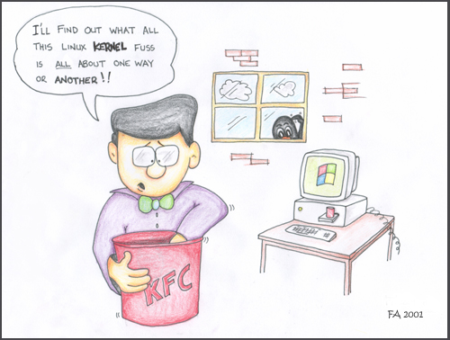
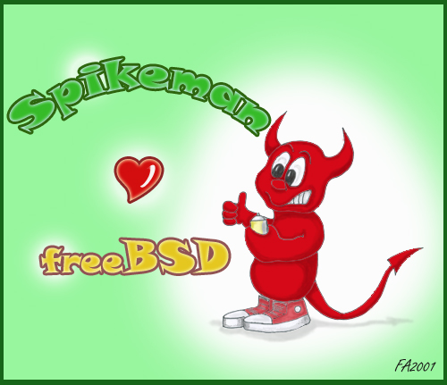

|
Table of Contents:
|
|||
Editor: Michael Orr
Technical Editor: Heather Stern
Senior Contributing Editor: Jim Dennis
Contributing Editors: Ben Okopnik, Dan Wilder, Don Marti
|
TWDT 1 (gzipped text file) TWDT 2 (HTML file) are files containing the entire issue: one in text format, one in HTML. They are provided strictly as a way to save the contents as one file for later printing in the format of your choice; there is no guarantee of working links in the HTML version. | |||
|
This page maintained by the Editor of Linux Gazette, gazette@linuxgazette.net
Copyright © 1996-2001 Specialized Systems Consultants, Inc. | |||
 The Mailbag
The Mailbag
Send tech-support questions, Tips, answers and article ideas to The Answer Gang <tag@lists.linuxgazette.net>. Other mail (including questions or comments about the Gazette itself) should go to <gazette@linuxgazette.net>. All material sent to either of these addresses will be considered for publication in the next issue. Please send answers to the original querent too, so that s/he can get the answer without waiting for the next issue.
Unanswered questions might appear here. Questions with answers--or answers only--appear in The Answer Gang, 2-Cent Tips, or here, depending on their content. There is no guarantee that questions will ever be answered, especially if not related to Linux.
Before asking a question, please check the Linux Gazette FAQ to see if it has been answered there.
 radius
radiusHello,
I wonder if it's possible to make a radius server on linux to authenticate the users on a remote mssql server 7.0 database.we use ms radius server and want to try linux.and if it's possible which radius server would you recommend for this job?
Thank you
Hakan Bilginer
HTML/CSS question - useful for dicussionI am currently trying to write html which will insert page breaks for printing, which is is CSS2, and just happens to be part of css2 not implemented in mozilla.
Is any anyone aware of any solutions to this using HTML/CSS1
neighbour table overflowHi all,
I just set up a nice little p120 with 2-NICs and RedHat7.0 for my mom and it is working great except for one thing which you have spoken of before, the "neighbour table overflow" message being printed out to the console.
In a response to a letter from James Zhuang, Heather spoke of how ifcfg-lo might be missing or that lo might not be up but on my system, ifcfg-lo is there and appears correct and lo is up and running. Also JimD mentioned that pump might be screwing up the loopback configuration and I am running that as my dhcp client; how might i remedy this problem? I'd be happy to provide more system information if it would help or if you have any other ideas on where i might look i would appreciate it.
Thanks,
-- Ian Berry
Old symptom, maybe a new problem. Anybody out there encountering this too? Even better if you've got a Tip sized answer. -- Heather
Ethernet: Slow download, fast uploadHi all there,
I recently bought a OVIS Live FSH8R 10/100 MPS autosensing switch and a
Davicom 9102 network card (dmfe.c) (They deliver Linux drivers on disk!!)
So I cabled all together and connected to a friends notebook.
From my Apache server he can download with speeds up to 9 MB/s, that's what
I expected. Now when I download files (big files to measure the
throughput) from his Apache (on Windows
 or via smbmount/Samba,
I'll just get a rate of 2,5 MB/s. With iptraf (an ip traffic analyser, it's
very good, IMO) I get a lot of big packets (1400-1500 bytes), which are
the data packages. But my network interface also receives/sends alot small
(<100 bytes) packages. These are confirmation packages, I assume.
or via smbmount/Samba,
I'll just get a rate of 2,5 MB/s. With iptraf (an ip traffic analyser, it's
very good, IMO) I get a lot of big packets (1400-1500 bytes), which are
the data packages. But my network interface also receives/sends alot small
(<100 bytes) packages. These are confirmation packages, I assume.
Both network cards run at 100 Mps, changing switch ports did not help. The switch has only two cables connected.
So, nice story
 . The question:
Why can't I get a fast downlink, but only a fast uplink.
. The question:
Why can't I get a fast downlink, but only a fast uplink.
Thanks, Matthias
Diablo under WineI read your article in Published in issue 71 of Linux Gazette October 2001 where Jefferson said Diablo ran fine under Wine at LWE. Which Diablo? I or II. I have II running fine, but I can't find anyone who has Diablo I running.
thanks,
chuck
I really don't recall whether it was I or II - but it was the honest to goodness CD from the Windows software package.
It was in the TRANSGAMING.com booth; Transgaming makes ActiveX extensions for WINE, and with those extensions, many games run fine. -- Heather
Tnx Ben & Breen
Ben & Breen
Thank you people who offered me help on loading modules, into the 6.2 system
I havent got it right yet, but learnt something for sure.
I dumped the system and will start from scratch again with a different card.
Thanks agn bill
re Nov issue - Dennis Field articleWould you kindly pass on to Mr Field that "Lunux Canada" seems to have exactly what he is looking for. It is not free, but moderately (compared with MS) priced. Certainly it is worth checking them out.
I found them at www.linuxcanada.com
They didn't have anything that interested me but they seem to have exactly what Mr Field needs.
Thanks for your wonderful magazine.
LG has received announcements from Linux Canada before about their POS products. I sent the URL to Dennis, but I also noted that I couldn't get into the site when I retested it. However, I can get into the site now. I think Dennis is looking for more of a software solution, whereas Linux Canada is more geared toward special hardware. But maybe Dennis will find what he needs. -- Mike
Thank you for your rapid reply.
So far as I know Linux Canada only sells software. There has (in the last 2 years) never been a suggestion of hardware sales or availability - only accounting and point of sale SOFTWARE.
The only time I have had trouble getting into their website was when the backbone was clogged, you could not even get anywhere in Canada then. You may have had a similar problem.
Harold A. J. Isaacs
RE:Battle for the Desktop: Why Linux Isn't WinningThere are a whole series of relatively common problems related in this article, like applications software which does not run smoothly on all distributions and hardware which is not suported by a distribution, or sometimes by any Linux driver at all.
The real point is what can be done about this, and who should do it. The author, Dennis Field, seems to put the blame with the Linux distribution he chose. He, or his employer, paid them good money and so Linux should do what he needs it to do. There is nothing wrong with the logic of this, but the prospect of all distributions, or the most comercial distributions, or even one Linux distribution running out of the box on all old and new PCs is pritty well nill. Also even if that did happen, it would not get Mr Field to his goal of using Linux for the whole bookshop in one giant leap.
The problems which would need to be fixed even in this one "case study" are spread accrose the developers of: Linux kernel, X windows, StarOffice, and the distribution's firewall. Each of these have nowhere near the resources or assistance from hardware designers which Microsoft has, and yet they produce software which (on other criteria than out of the box installation on all PCs) far outperforms Microsoft's products. They have a right to pride in their work and respect from others, and simply calling for any of these teams to work harder till the problems nolonger exist would really mean accepting that Linux has lost, because even if the developers gave up all their free time, the extra improvement could never have the kind of impact which the author desires.
I have writen elsewhere (http://www.suite101.com/article.cfm/15359/84340) how I would generally advise SMEs to move towards Linux, but given the evidence of interest in building fairly complex systems at low cost, maybe we need a business by business (Bookshops, Chemists, Garages) Linux forum to give system integration with Linux the kind of boost which Linux Documentation Project (LDP) and sourceforge have done in other ways.
Yours
Ian
[Dennis also has another article in this issue. -Iron.]
Re: Battle for the Desktop: Why Linux Isn't WinningDennis,
It is unfortunate that you had trouble installing Linux on your ThinkPad. You don't say what distros you tried, and each distro works a bit differently. Since installation troubles are really the domain of the distro and not the operating system itself it seems unfair that you name the problem as Linux but avoided naming the distros that actually caused you the trouble.
Have you tried Debian Linux? This is a very popular distro, supported entirely by volunteers. You could download the boot/root floppy images from debian.org, copy them on to two floppies, then boot and install a minimal Debian Linux OS. This is usually quite easy. After configuring your Linux network settings and adjusting your sources.list to point to the Debian download site you could then use dselect or apt-get to install the rest of whatever you want automatically over the Internet.
That you would have the troubles you did isn't too surprising. Most Windows users would have trouble in the similar circumstances trying to install Windows on their own for the first time without ever having used it before. A more realistic approach when installing Linux for the first time is to enlist the aid of other Linux users. Most Linux users groups host monthly installfests for this reason, so that new users get the install help they need from experienced hands. Had you done that I expect you would have had an operational Linux laptop within minutes. Another approach is to join the debian mailing list where anybody usually gets answers to install problems within a few minutes.
Your analogy comparing Linux to a Ferrari with no wheels is unjust. The wheels are right there, you just had a problem with your "Some Assembly Required" situation. You were not picking up your new Ferrari at the dealer, were you? If you were buying a new Thinkpad purchased from IBM with Linux already pre-installed (look under "personal systems" at www.ibm.com/linux) you should have no installation problems whatsoever.
Please let me know if I can be of any help to you installing Debian Linux on your laptop.
Cheers,
Robin
The distinction between Tips and Articles
 Articles go to gazette@linuxgazette.net in HTML format. Tips, tech-support questions
and tech-support answers go to tag@lists.linuxgazette.net in text format.
Articles go to gazette@linuxgazette.net in HTML format. Tips, tech-support questions
and tech-support answers go to tag@lists.linuxgazette.net in text format.
Basically, a tip covers just one simple topic in a screenful or two (or less). An article covers several subtopics under separate headings and/or is more than a couple screenfulls.
... and Tips rarely involve more than one Answer Gang member's comments. I do like to use this rule of thumb: would the answer (possibly without explanation) fit in a .sig block? If not, it's probably not small enough to make a good Tip.
When the discussions get going even a short thread might go into TAG, and some of the better long answers in TAG still aren't as long as a standard article. I'd also like to remind people that for article submissions, we prefer simple HTML to the font-laden stuff automatically generated by most web browsers when "mail as HTML" is turned on. -- Heather
Issue 13The following section isn't displayed correctly because you don't use < and > for the <stdio> part.
#include
main()
{
printf("test\n");
fflush(stdout);
}
They will not echo what I print.
Thanks Russell. We don't generally go through the back issues
to correct things like this; things have gotten a lot better
since then, and I'm proud to say that things have to be sneakier
that that to put bugs into our HTML code these days
 -- Heather
-- Heather
 More 2¢ Tips!
More 2¢ Tips!
 Command-line calculator
Command-line calculatorOne of the things I've always found amusing is watching people working at a PC suddenly stop and go digging through their desk for a calculator. I mean, good grief - all that processing power, and they have to go back to the Stone Age! Well, if you're one of those unfortunates, suffer no more. Just put the following lines in your "~/.bash_profile":
calc(){ perl -wlne'print eval'; }
export -f calc
The next time you log in (or if you source ".bash_profile"), the function will be available to you.
ben@Baldur:~$ calc 3.141592653*6**2 # What is the area of a circle 6 meters across? 113.097335508 ( 3 - 117 ) % 7 # If today is Tuesday, what day was it 117 days ago? 5 sqrt(115) * 1.34 # Hull speed of a ship with a load waterline of 115' 14.3698990949832 ben@Baldur:~$
Note that I actually typed those comments into "calc"; it chews and swallows them without a problem.
"calc" is actually a 'gateway' into Perl (via the "eval" mechanism); that makes it into quite a powerful gadget. It supports all the math/trig/etc. operations that are built into Perl - functions like "abs", "atan2", "cos", "exp", "hex", "int", "log", "oct", "sin", "sqrt", and even "rand" (rolling dice, anyone?)
ben@Baldur:~$ calc print int rand(6) + 1 for 1..20 # Roll 20 6-sided dice 6 1 6 5 3 5 3 5 1 1 6 4 6 3 3 4 1 1 1 4
"calc" can be as simple as you like - or provide you with the kind of power that calculators just can't match. It's all in what you choose to do with it. By the way, be aware: there's nothing in "calc" that restricts you to "math-only" commands; if you type "unlink my_important_file", Perl will happily obey your orders (i.e., delete that file.) So, as with everything in Linux, be careful - and have fun.
[Python's interactive mode can also be used as a calculator. -Iron.]
Apache startup script improvementEvery thime I setup Apache I add two lines to the startup script to parse the config file for the variable containing the name of the file to store the PID at.
It seems logical to me to automate this, since the script has an entry for the pidfile, but really should also "knows" the location of the config file, why not parse any redundant information from it and remove the risk of conflicting parameters.
Here is what I add to the /etc/init.d/apache start|stop script:
CONFIG_FILE=/etc/apache/httpd.conf PIDFILE=`sed -e '/^PidFile /!d; s/PidFile //' $CONFIG_FILE`
or for you bashers:
PIDFILE=$(sed -e '/^PidFile /!d; s/PidFile //' $CONFIG_FILE)
Also, I usually pass the name of the config file to apache explicitly, so that it's obvious via "ps ef" what configuration is currently being used.
Seems to make sense to me. In fact, I'd hope this makes it into the scripts included in the distro.
[JimD] It's a good suggestion.
Personally I think the start-up (rc) scripts from most distributions are a bit lacking. For example I've always thought that it was remiss of the start up script that mounts the /proc filesystems fails to check that the mount point is a properly empty directory.
In the case of your suggestion, you are eliminating what I call a "moving part" (an opportunity for different configuration elements from different sources to get out of sync with one another).
Of course there are many other failure opportunities which could be mitigated with additional tests. For example: what if there are multiple PidFile directives? what if the case doesn't match your sed expression (doesn't Apache tread PidFile as equivalent to PIDFile, etc)?
[Ben]
The usual way that Debian does it is also fairly sensible. This is from "/etc/init.d/skeleton" (the template that you're supposed to use when writing an "init.d" script under Debian), by Miquel van Smoorenburg and Ian Murdock:
See attached apache.init-d-fragment.txt
Any daemon, when started via this mechanism, gets an individual pidfile.
[JimD]
I think you miss his point. Debian's rc scripts are no better than Red Hat's in this respect. If one changes the PidFile directive in the .conf file, then Apache's notion of its PID file location disagrees with Debian's startup/shutdown scripts.
That could be reported as a bug to the maintainer --- but it's unclear how far we should go in making the rc scripts more dynamic. It would be a bit absurd to do comprehensive failure-mode analysis and mitigation for all of the rc scripts. At some point we must just give up (maybe calling on logger -s to emit and error message).
The problem with making foolproof systems is that the universe keeps creating more ingenious fools.
Re: De-enhancing textRichard Bly sent us:
Just in case you were not aware, the utility colcrt will take a man page output and format it without all the weird stuff. The underlining is put on the next line so both the text and the underline are visable.
[Thomas Adam] Why not just use the following......:
man manname | col -b > ./mymanpage.man
where "manpage" is the man page (obviously). The "col" command in this case (with the -b flag) will filter reverse line feeds.
There is also the option of using "man2html" for the adventurous......
Guys,
I think that following method is much simpler:
man thttpd | col -bx
Regards
Peter Dzimko
Fun with chroot jailsBen asked:
There's one you could write up (assuming you ever got the time to do it, that is) - creating those "chroot" jails. That's something I'd love to have the specifics of; I understand the concept well enough, but having never implemented one, I'm short on the actual mechanics.
There's a fairly current Freshmeat entry called "cage". Initial release. Not my stuff, but it's exactly the right idea - some support for a bash-shell centered chroot jail, so you can jail more complex apps a little more safely, e.g. make chroot a one way trip, nicking off a few linux-privs along the way.
Sounds like cool fun; I'll definitely check it out.
In the "barely enough to run an app" category, there's a helpful document for BIND, and a different one for Postfix, iirc, but I don't have their URLs memorized and I'm trying to avoid getting -too- distracted. (too late!)
<grin> I'll search for those some time this coming week...
There are a few patches and at least one kernel module (capsel) around now, that offer to stop the chroot() call from happening more than once, preventing the usual script-kiddy method of getting out of one, among their other helpful efforts.
Uh... what's the usual script-kiddy method? I mean, I know I can type 'exit' if I've started a regular 'chroot' without specifying a prog... but... maybe I'm not visualizing it right. I'm seeing a chroot jail as a "system within a system" - if you exit, you end up at a login prompt. That's it. Real "root" is only available via a different IP; in effect, you're logging into a different system. Correct?
Minimum Mechanics:
- blank hard disk
- install parent level with syslog, cron, ssh, sudo.
- create subdirs for jail areas (e.g. /home/HTTPD-jail, /home/MAIL-jail, etc.)
- run installer again, using "already mounted directory". Once per jail of course.
Mhm. I wonder how hard it would be to create a stripped-down installer just for the purpose. Might make a nice project, don't you think?- tweak each jail like it was a seperate machine you could boot into normally that was dedicated to the purpose. Each jail's ssh must be on a unique IP address/port number combo.
- grafting - setup top level so it runs services out of their jails, already chrooted there.
- time to make an IPL backup
- stripping - take more stuff out of the jails, that they will NEVER need because they are really not the top level after all. e.g. fsck, copy of the kernel and modules. This may require some brutal adjustments to the packaging systems so they won't get put back if you choose to upgrade the jails later. Possibly make it so there should never be a need to be root inside the jail anyway. etc.
- time to make IPL backup #2, on a different media from #1. Allows for return to this point, or to decide you went overboard and try shaving that differently by starting again from #1.
Eh... you lost me there on #6; that's the part I'm not seeing. What's the interaction mechanism between the two levels? How does the "top" see the "bottom" without the "bottom" seeing the "top"?
I usually run a lot of things from /etc/inittab so they can be respawned if they die.
For #8 I agree, that's the way I would do it - since root can twiddle anything on the mounted filesystems, there shouldn't even be root access in there. Although I would set up some sort of an "admin" account, with carefully decided powers.
Might be helpful to have more hard disks, or seperate partitions for each jail. I gotta stop procrastinating like this ;>
I'm glad you did.
 Thanks - I'll dig
into it some more!
Thanks - I'll dig
into it some more!
Password listOK, so this is straight out of any security FAQ: whatever you do, _don't_ keep a list of your passwords on your machine. Right? Right.
Now, since you're going to do it anyway...
 Here's a somewhat safer way
to do it - note that I did not say "safe", just "safeR". The way I see it,
those of you who don't keep one won't be affected, and those of you that do
will notch up the security just a tad.
Here's a somewhat safer way
to do it - note that I did not say "safe", just "safeR". The way I see it,
those of you who don't keep one won't be affected, and those of you that do
will notch up the security just a tad.
To make this work, you'll need something to keep your secrets for you:
See attached pass.bash.txt
Here's what you do: put this script in a directory that's in your path, say "/usr/local/bin", then set the ownership and permissions as follows:
chown root:root /usr/local/bin/pass # You must be root to do this chmod 755 /usr/local/bin/pass # And this, too
You now encrypt the file that contains your list of hosts, usernames, and passwords, one per line:
www.cia.gov JohnDoe cRYpTo www.kgb.ru IvanIvanov bOLsh0isEkRET www.mossad.il PloniAlmoni sHiN8eT kempeitai.jp NanashiNoGombe haITTeM0ikEmAsEN www.mybroker.com FulanoMengano QuIenSaBE www.mybank.bm MattiMeikalainen sAipPUakAuPPIAs www.centralbank.an JanModaal fInanCIeeL
...with a command like:
crypt My1SecretPasswD < mysecrets > ~/pass
Move the original ("mysecrets") to a floppy and put it somewhere safe (yes,
that usually means where nobody - not even you will ever find it again.
 .
Remember to update it once in a while. As to the encrypted file, all anyone
is going to see when they look at it (you did set its permissions to 0600,
right?) is a bunch of binary-looking gobbledygook.
.
Remember to update it once in a while. As to the encrypted file, all anyone
is going to see when they look at it (you did set its permissions to 0600,
right?) is a bunch of binary-looking gobbledygook.
Now, let's say you want to see what the combo is for "mossad". Easy enough:
spy@Hideout.com:~$ pass mossad Enter password (screen echo disabled): www.mossad.il PloniAlmoni sHiN8eT spy@Hideout.com:~$
If you want to edit the file, just type "pass -e"; this will invoke your editor ("$EDITOR" - "vi" by default) on the decrypted version of the file.
"grep"-related tip: if you want to just see the entire file, call it as
pass $
DNSDavid Menegat asked us the following:
I am trying to set up a name server on my mandrake 8 system and I believe I installed the dns package I just don't know how to configure it do you know where there is a faq or have any advice for me. I just bought a domain name and this is the last piece in the puzzle before the final configuration and I transfer the name to my machine.
Thank you David Menegat
[Faber] Well, there's always the HOWTOs: http://www.linuxdocs.org/HOWTOs/DNS-HOWTO.html
[Heather] There's also the absolutely marvelous resaources of "Ask Mr. DNS".
Although Acme Byte and Wire was bought by Network Solutions, there still exists his marvelous archive of detailed answers to how DNS works:
http://www.acmebw.com/askmrdns
If that doesn't answer what you need, you can also ask him questions directly at his current email address... which I won't tell you, you'll have to read his archive firstBTW as far as I can tell, he only answers questions for DNS sites which he can access, so he can see what things are resolving like.
We hope it helps! Let us know if Linux itself has any extra questions for you, or there's a spot in the DNS-HOWTO we can explain a bit better for you. We want it to make sense
To which David replies:
Thank you very much I'm sure I'll have no problem now
thank you
David Menegat
using m-w online dictionary.looking up words in the m-w dictionary. I thought you carried this about a year ago.
create a file named def containing
# def <word> goes to Mirriam Webster page of it definition lynx "http://www.m-w.com/cgi-bin/dictionary?book=Dictionary&va=$*"
used as
def word
PacHell DSL w/LINUXJohny asked us ... in quoted-printable, and in HTML:
Im a newbie to Linux but want to lear really bad. Im tired of the
limitations in Windows. Anyway, I just installed OpenLinux eDesktop2.4
Caldera Systems and want to know
how to configure it for use with my
PacBell DSL using an Efficient Networks SPEEDSTREAM Modem.
a.. 5260 ADSL (ITU Annex A)
a.. 5260: G.DMT, G.Lite, T1.413 (ADSL)
I cannot find a driver or figure out where to configure or how to
configure all of this to work so that I can get my linux online. Please
help or forward this to anyone and everyone who may be able to help me
out. Thank you very much for your time and I hope I can get this going
very soon.
First, please send mail in text format rather than text+HTML.
External DSL modems (that connect to an ordinary Ethernet card via an Ethernet cable) work fine on Linux. Internal DSL modems are iffy, especially if they're USB. It all depends on whether the manufacturer provides Linux drivers or gives us enough of the card's specs to enable us to write a driver or expand one of our existing drivers. Unfortunately, there are so many different types of DSL modems and none of them are as widely used as the different analog modems, so drivers are less likely.
Also, there are analog modems called "Winmodems" that are marketed as real modems but they actually have part of their hardware missing. The missing portion is handled by the Windows driver. These didn't run under Linux for several years, until some Linuxers reverse-engineered them enough to make drivers for at least some of them. I don't know whether DSL modems have an equivalent to these "Winmodems", but you have to watch out for that possibility. Especially if the DSL provider "supports only Windows".
If your modem is new enough that you can return it and get an external modem instead, that's your best bet. It may cost $100-200 more, but it will be worth it because the modem will be more standards compliant, meaning fewer headaches in the future when you upgrade, move or switch systems.
I'm not sure if DSL has fallen victim to the "sahave off chips to save a few cents a motherboard" craze. On the other hand, there's PPP over Ethernet (pppoe) to run away from. Even though you in theory would get full ethernet bandwidth, in practice that protocol slows you down to PPP speeds deliberately. Some very knowledgeable sysadmins I know go directly into "rant mode" when just hearing the acronym. -- Heather
How we fixed "FW-I/LINUX kmalloc" problemIt may be too small for article and too big for letter, but I hope it will useful for LINUX/FW-1 administrators and provide a good example of OSS advantages.
Regards,
Vitaly Karasik Unix System Administrator Israel
But it's perfect for a 2 Cent Tip. -- Iron
---- We've tried to replace our NOKIA FW-I box with LINUX one [FW-I v4.1 SP4 + RedHat 6.2 2.2.19 kernel].
Installation was pretty strainforward, but every time when we tried to install policy from our management station we got few messages in /var/log/messages:
/var/log/messages.4:Oct 5 14:29:42 fw kernel: kmalloc: Size (786540) too large /var/log/messages.4:Oct 5 14:29:42 fw kernel: kmalloc: Size (786636) too large /var/log/messages.4:Oct 5 14:29:42 fw kernel: kmalloc: Size (789660) too large
Our policy contains about 90 rules & 400 objects with few VPN.
Short search with Google pointed us to a few letters with the same problems, but didn't help to solve the problem. (for instance, "[FW1] Strange things in RH62 + Fw1-41-Sp2( kmalloc: Size (275548) too large )" thread on http://www.firewall-1.org/2001-01/maillist.html)
According to skl1314 from Check Point SecureKnowledge, "solution is currently not available. Issue under investigation".
But this search helped me to understand what is exactly the problem: FW-1 call "kmalloc" function in order to get block of memory. But linux's kmalloc [kernels 2.2.x & 2.4.x] knows to allocate memory in blocks 2K,4K, ... 128K only. And FW-1 in our case wants to get ~800 K memory.
The solution:
I fixed slab.c in order to increase kmalloc limit from 128K to 1280K. Diff from orig slab.c for kernel 2.2.19 is below:
298c298
< #define SLAB_OBJ_MAX_ORDER 8 /* 32 pages */
---
> #define SLAB_OBJ_MAX_ORDER 5 /* 32 pages */
301c301
< #define SLAB_MAX_GFP_ORDER 8 /* 32 pages */
---
> #define SLAB_MAX_GFP_ORDER 5 /* 32 pages */
345,347d344
< {262144, NULL},
< {524288, NULL},
< {1048576, NULL},
370,374c367
< "size-131072",
< "size-262144",
< "size-524288",
< "size-1048576"
<
---
> "size-131072"
After compiling & installing new kernel we're able to install fw policy without any problem.
DSL Drivers for USBThis is in answer to the question about USB DSL drivers for Linux.
There are drivers out there for the Alcatel SpeedTouch USB. The SpeedStream 4060 is actually made by Alcatel.
I have setup the SpeedTouch in RedHat 7.1 and gotten it to successfully work on my home network.
Andy Fore
Computer Services Specialist III
gtkmm-config problembash-2.05$ g++ test.cc -o test `gtkmm-config --cflags --libs` In file included from /opt/gnome/include/gtk--/base.h:34, from /opt/gnome/include/gtk--/object.h:30, from /opt/gnome/include/gtk--/widget.h:32, from /opt/gnome/include/gtk--/container.h:27, from /opt/gnome/include/gtk--/bin.h:27, from /opt/gnome/include/gtk--/button.h:27, from test.cc:2: /opt/gnome/include/gtk--/proxy.h:6: sigc++/signal_system.h: No such file or directory /opt/gnome/include/gtk--/proxy.h:7: sigc++/bind.h: No such file or directory /opt/gnome/include/gtk--/proxy.h:8: sigc++/convert.h: No such file or directory test.cc:4: `#include' expects "FILENAME" or <FILENAME>
For some reason (I believe) something is not getting passed to look for the sigc++ headers in /opt/gnome/include/sigc++-1.0/sigc++.
I was getting more errors about not being able to find sigc++ headers before I added -I/opt/gnome/include/sigc++-1.0/sigc++ to the gtkmm-config file. Without this line or taking off the sigc++ directory, produces more errors about not being able to find the headers in sigc++.
The sigc-config file looks just right.
Furthermore, this all started when I tried to compile quickedit. During the configure process I received and error that gtk-- was not installed correctly and/or I should edit the gtkmm-config script to correct anything off in there. Viewing the config.log shows the same error as above.
... after a bit of fighting with it ...
The problem must have been with gtkmm-config or the gtkmm packages I had originally installed. I compiled gtkmm from the sources and everything appears fine. Quickedit compiled without complaint. I noticed the one line in the new gtkmm-config that was not in the old was -I/opt/gnome/lib/sigc++-1.0/include. I had mistakenly put this in the libs area instead of the cflags. I'm not sure whether this was the whole crux of the problem though.
-- Daniel S. Washko Lehigh Valley Linux Users Group www.thelinuxlink.net/lvlinux get slack (www.slackware.com ) and get happy
Linux equivalent for Active Directory?Ok Im just learning Linux so bare with this question...I know in Windows 2000 Server you can create a Active Directory and install a Distributed Files system...what would be the Linux counterpart to this be? I've poored over alot of FAQs but I must not be looking for the correct terminology. So far the closest Ive found is NIS/NIS+ with NFS.
Take a look at LDAP (i.e., where Microsoft got the original idea) - OpenLDAP <http://www.openldap.org> has some good info on their site; their "General LDAP FAQ" is worth a read. As well, Jeff Hodges "LDAP Roadmap" <http://www.kingsmountain.com/ldapRoadmap.shtml> is an excellent resource. Novell with their NDS (Novell Directory Services) had an early jump at the idea of abstracting the directory structure from the FS; chances are pretty high (I'm making a guess here - I don't know Caldera that well) that Caldera, being a Novell "sister" company, supports it. To confuse the tangled skein a bit more, Novell has released the JLDAP (the LDAP class libraries for Java) to the world - I haven't done Novell stuff in years, but I would guess that LDAPv3 is what they're using these days. There might be other implementations of the idea, but the key words, rather than "Active Directory", would be "LDAP" (Lightweight Directory Access Protocol) and "X.500" (the protocol that defines LDAP.)
Re: [LG 72] 2c Tips #4 translated oddlyHi,
I think the translation of the original message is wrong. The original poster is asking about a content manager, not an editor. Here:
información acerca de algun manejador de PHP con el cual pueda modificar los archivos de páginas de internet bajo Linux Red Hat 7.1
Even if the Spanish translation of several computer terms varies wildly across countries, I can't imagine a place where an 'editor' would be called 'manejador'. This word means 'manager'. Even if it's not clear what the original author actually wants or needs, I think he's thinking of something along the lines of Midgard, available at http://www.midgard-project.org.
If the original author does mean an editor, Heather is right on the spot: vim, in particular vim 6, has some nice features, like improved syntax definitions and folding, that make editing of HTML and PHP files much easier.
HTH,
--
Marcelo
Thanks Marcelo. The original querent never wrote back to tell us what he was looking for, even after we asked him. So I'm inclined to think he's either already found what he needs, or it's his fault if we misunderstood it. But we've published your tip for other readers. -- Iron
 The Answer Gang
The Answer Gang

There is no guarantee that your questions here will ever be answered. Readers at confidential sites must provide permission to publish. However, you can be published anonymously - just let us know!
TAG Member bios | FAQ | Knowledge base
 Greetings from Heather Stern
Greetings from Heather SternHi everyone and welcome! This month I hope you like the threads I've selected for you, nice, juicy, full of meat...
Hmm, I wasn't expecting to make that sound like the turkey dinner I had last week. Oh well! I hope you had a good Thanksgiving, and of course we all wish you the best for the winter season too.
Now on to the nitpicking
 By a HUGE margin the Peeve of the Month is poor use of the
subject line. It so happens that we had really high traffic on our
administrative list -- something to do with the
new FAQ and knowledge
base getting posted, everybody give a big hand to Ben and Chris!
-- but, we actually got more
slices of mail with useless subjects, totalling about a fifth of
the overall mail for the month.
By a HUGE margin the Peeve of the Month is poor use of the
subject line. It so happens that we had really high traffic on our
administrative list -- something to do with the
new FAQ and knowledge
base getting posted, everybody give a big hand to Ben and Chris!
-- but, we actually got more
slices of mail with useless subjects, totalling about a fifth of
the overall mail for the month.
What do I mean? Well, I'll put it the same way Ben does. You have only 40 characters (in most mailers). Don't waste them on things like "Help me" (why else would you be mailing us? Hoping to frame our most creative flames?) and "Linux problem" (good, you have the OS we know best) or even, cheerful though it makes us, "Hi Gazette" (yep, that's us, you reached the right place).
Even worse is people who have no subject at all. Now it's true that with so many helpful souls in the Gang a lot more of the questions get answered nowadays. But, my statistics show that about two-thirds of the messages with no subject were utterly ignored. Not even a worn out match starting a flame. Nada, zip, zilch. So you really hurt your chances of getting anything more than a lump of coal in your stocking by not having a real subject on your questions for The Answer Gang.
So, the trick is, make sure your subject contains at least one noun or verb that relates directly to the question. "SuSE install" or "wheelmouse woes" or something, so we can guess if that message is something we know about, so we can leap into the fray.
Okay, now what can I say about Linux? Well, let's see. It'd be a great x-mas present to see that 2.4 kernel stabilize now that 2.5 is properly set up. (I'd go for "peace on earth" but it seems to be making a nasty hole in the stocking, darn it.) I already lost my bet that it'd be 2.4.14 that would win. What I really want is one of those 21" studio LCDs but, I'm broke this season, so I'll probably have to make "21 inch diagonal" my New Year's Resolution. <brickbats appear from offstage> hey! watch it! You trying to break my old monitor? That's it for now. Whatever you do this season don't forget to Make Linux A Little More Fun.
Jim and I will be at the annual Large Installation System Administrators conference in San Diego, the first week of December. USENIX always has a great seminar track, plus a lot of the developers we've gotten to know personally are regulars. If you can afford it, I highly recommend going. If you are going, perhaps we'll see you there.
Failing that, see you next year...
clock settingFrom Bryan Henderson
Answered By Bryan Henderson
By this odd chance, the Gang get to be the querents, and we have a real guru to answer our clock questions at hand. Thanks Bryan! -- Heather
As the maintainer of the main Linux hardware clock managing program, Hwclock, I found the Answer Gang discussion and survey of daylight savings time switches and other hardware clock issues enlightening. I'd like to add some important information.
 [John Karns]
Thanx for your contribution! I for one really appreciate it.
[John Karns]
Thanx for your contribution! I for one really appreciate it.
 [Ben]
First thing, Bryan - thank you for the info, as well as for the very useful
job that you're doing!
[Ben]
First thing, Bryan - thank you for the info, as well as for the very useful
job that you're doing!
 [Mike]
Yes, Bryan, thanks for taking the time to write that explanation, and
for offering to debug distribution-caused problems.
[Mike]
Yes, Bryan, thanks for taking the time to write that explanation, and
for offering to debug distribution-caused problems.
 [John K]
How about time zones where daylight savings doesn't apply?
[John K]
How about time zones where daylight savings doesn't apply?
 [Ben]
I certainly appreciate it; I'm sure that a number of
our readers do as well. One of your tips in here - the persistence of "UTC"
- has already let me figure out why my localtime was "backwards" (i.e., 5
hours earlier instead of later) if I set the hardware clock to UTC. I don't
use Windows, but I do travel quite a lot, which means I have to keep
changing time zones; do you have any advice or pertinent info for doing
this
[Ben]
I certainly appreciate it; I'm sure that a number of
our readers do as well. One of your tips in here - the persistence of "UTC"
- has already let me figure out why my localtime was "backwards" (i.e., 5
hours earlier instead of later) if I set the hardware clock to UTC. I don't
use Windows, but I do travel quite a lot, which means I have to keep
changing time zones; do you have any advice or pertinent info for doing
this
 [Ben]
Ah, so. Actually, I've often thought of writing up a "Mobile Linux"
article - a sort of a HOWTO for traveling with Linux - and you've just
cleared up one of the last pieces of the puzzle. Tres cool. For those
folks who need to bounce around as I do, here's something that'll be
useful:
[Ben]
Ah, so. Actually, I've often thought of writing up a "Mobile Linux"
article - a sort of a HOWTO for traveling with Linux - and you've just
cleared up one of the last pieces of the puzzle. Tres cool. For those
folks who need to bounce around as I do, here's something that'll be
useful:
See attached chzone1.bash.txt
This script will present you with a menu of choices for the Eastern, Central, Mountain, and Pacific timezones. Pick one, and you're set.
 [Ben]
Odd. The entire "tz*" suite (tzselect, tzconfig, etc.) uses the "America"
version. <looking at the contents of 'US'> Ah. OK, that seems to make sense
- at least you'd be setting the timezone by name (
[Ben]
Odd. The entire "tz*" suite (tzselect, tzconfig, etc.) uses the "America"
version. <looking at the contents of 'US'> Ah. OK, that seems to make sense
- at least you'd be setting the timezone by name (
 I'd spent a few
minutes hopscotching through "tzselect", back and forth, back and forth, to
figure out which cities it used for which zones.) So, here's an updated
version of "chzone" - this one actually covers a wider range but keeps the
choice list down to the actual zones rather than the (possibly confusing)
list of cities:
I'd spent a few
minutes hopscotching through "tzselect", back and forth, back and forth, to
figure out which cities it used for which zones.) So, here's an updated
version of "chzone" - this one actually covers a wider range but keeps the
choice list down to the actual zones rather than the (possibly confusing)
list of cities:
See attached chzone2.bash.txt
Note that changing timezones doesn't cause any time discontinuity. You aren't changing the clock, only the language your system uses to communicate to humans about what time it is.
 [Ben]
... (hopefully, without screwing up "/etc/timeadj") other than setting the
TZ to the appropriate value? Are there any non-obvious issues with the
clock that I should be aware of when I do this?
[Ben]
... (hopefully, without screwing up "/etc/timeadj") other than setting the
TZ to the appropriate value? Are there any non-obvious issues with the
clock that I should be aware of when I do this?
The major practical drawback to keeping your hardware clock in local time is that in most locales, local time jumps an hour twice a year. The hardware clock is incapable of implementing that. So you have to explicitly reset the hardware clock twice a year. Windows does that automatically. In Linux, you can do it with a startup script and/or cron job, but I'm not aware of any Linux distribution that does it out of the box. If you're running both Linux and Windows, though, I think both would make the adjustment!
 [John K]
In my case, the time doesn't change, as I'm near to the equator.
[John K]
In my case, the time doesn't change, as I'm near to the equator.
 [John K]
OK, but I think you understand what I'm saying - daylight savings time
doesn't exist here.
[John K]
OK, but I think you understand what I'm saying - daylight savings time
doesn't exist here.
 [Mike]
Where do you live? Indiana?
[Mike]
Where do you live? Indiana?
Why are there not timezone configurations for those locations, and if they're not, how hard is it to copy one and modify it to disable the DST?
 [John K]
Also,
the Linux based distributed network I'm setting up, at this time is all
contained within one time zone. Thus, I haven't felt compelled to leave
my hw clock set for utc. I did try it once on my personal laptop, (sans
the --utc option though - I probably used hwclock to set the time, but
can't remember all the details) but didn't like the fact the timestamps on
my files (ls) were not in agreement with the time as displayed by the
'date' command
[John K]
Also,
the Linux based distributed network I'm setting up, at this time is all
contained within one time zone. Thus, I haven't felt compelled to leave
my hw clock set for utc. I did try it once on my personal laptop, (sans
the --utc option though - I probably used hwclock to set the time, but
can't remember all the details) but didn't like the fact the timestamps on
my files (ls) were not in agreement with the time as displayed by the
'date' command
 [John K]
I've never done that or even considered doing it, as I can see where it
could really distort parts of the system and create havoc. What I'm
trying to say here is that, well let me give an example:
[John K]
I've never done that or even considered doing it, as I can see where it
could really distort parts of the system and create havoc. What I'm
trying to say here is that, well let me give an example:
Thus I constantly have to do mental arithmetic to figure relate these times to my frame of reference, which is local time. It's particularly undesirable when those 6 hrs spans midnight, so the date-stamp shows a different day.
 [John K]
- it tends to make things a little bit confusing. So I
changed things back to local time.
[John K]
- it tends to make things a little bit confusing. So I
changed things back to local time.
I do also run Windows but mostly via VMWare on a Linux host. Do you have any info or input in regards to that scenario?
My main concerns are these:
The distributed net that I'm setting up could eventually span outside of
the local time zone. When and if that happens, it might make sense to use
utc.
 [John K]
I have read about the Unix standard format and more or less know what it
is, but don't really understand the big picture here - how all the parts
fit together.
[John K]
I have read about the Unix standard format and more or less know what it
is, but don't really understand the big picture here - how all the parts
fit together.
 [John K]
But the LANs are a heterogeneous mixture of W9x and Linux clients
with a Linux server providing application sharing and Internet gateway
services. I wish to use samba for W9x file sharing and login / user
profile control, as well as run a batch file to sync the clocks on the w9x
clients to the server clock. In short, I want to have all clocks more or
less synchronized.
[John K]
But the LANs are a heterogeneous mixture of W9x and Linux clients
with a Linux server providing application sharing and Internet gateway
services. I wish to use samba for W9x file sharing and login / user
profile control, as well as run a batch file to sync the clocks on the w9x
clients to the server clock. In short, I want to have all clocks more or
less synchronized.
I don't quite follow you here - "displayed times"? .. what about syslogd? My concern is mostly with file date-stamps, and system logs. Lets say I'm examining a system log of a remote system located in a different time zone. I would like to avoid confusion about when specific events may have happened in relation to my local time - and this would be my principal motivation for using UTC. For example, I will have a "master server" which will be doing telephone dialup to remote hosts to exchange mail, collect system logs, etc. I would like to have the master server log timestamps of the dialup session agree with those of the remote system logs, rather than all be skewed one or two hours. Same with file creation & modification timestamps. I will likely have a Perl or bash script run via cron on remote systems to collect all files of interest having a date-stamp falling within a certain time period.
My understanding prior to the test I did at least a year ago when I set my hw clock to UTC, was that such date-stamps would be shown (e.g., via ls) as local time, but UTC would allow for a standard that would put all systems using it on an equal level, and would help to eliminate confusion regarding date-stamps on files between different systems. But that didn't seem to be the case - it simply added more confusion.
 [John K]
That's what I have been thinking - sync the "master server" clock via NTP
(ADSL has just recently been introduced here, so now a full time Internet
connection is possible); then use a system util such as ntpdate or rdate
(samba logon batch files for the other OS) to sync all other clocks to the
master. Since my "WAN" will be mostly dialup, using the NTP daemon an all
servers is not possible or practical.
[John K]
That's what I have been thinking - sync the "master server" clock via NTP
(ADSL has just recently been introduced here, so now a full time Internet
connection is possible); then use a system util such as ntpdate or rdate
(samba logon batch files for the other OS) to sync all other clocks to the
master. Since my "WAN" will be mostly dialup, using the NTP daemon an all
servers is not possible or practical.
I still have questions about UTC re: W9x and other flavors under VMWare. I guess a little experimentation is in order.
I hope that I haven't rambled too much, and thanx for your input.
Any thoughts you might care to express about this would be greatly appreciated.
 [Ben]
Is the above configuration anything that needs to be done by the local
admin/user, or does the above mean "properly configured by the
author/maintainer/etc of the C library"?
[Ben]
Is the above configuration anything that needs to be done by the local
admin/user, or does the above mean "properly configured by the
author/maintainer/etc of the C library"?
 [Ben]
Hm. All I can do is hope - now that my hardware clock presumably resembles
something normal - that the Debian installation options are right. Heck,
I'll even go so far as to disable my "spring forward, fall back" cron jobs.
[Ben]
Hm. All I can do is hope - now that my hardware clock presumably resembles
something normal - that the Debian installation options are right. Heck,
I'll even go so far as to disable my "spring forward, fall back" cron jobs.
 I'm a brave soul, I am.
I'm a brave soul, I am.
 [John K]
I'm a bit fuzzy on this issue too. What is the expected / intended system
behavior in this regard? If I set my clock to UTC, and specify hwclock's
--utc parm as you have suggested, then the system should compensate in
such a way that the ls command would show timestamps reflected as *local
time* - or UTC?
[John K]
I'm a bit fuzzy on this issue too. What is the expected / intended system
behavior in this regard? If I set my clock to UTC, and specify hwclock's
--utc parm as you have suggested, then the system should compensate in
such a way that the ls command would show timestamps reflected as *local
time* - or UTC?
I suppose that the system always stamps the files in accordance with the Unix standard format, and it is up to the various parts of the system (ls, tar, and the like) to do conversions in relation to either UTC or local time. What I interpret you as saying is that there have been instances where these various progs are not in agreement concerning the method with which these conversions are done. Am I Correct? I guess it's time for another try at setting one of my boxes to UTC to find out what.
I think this was what I was experiencing as well (SuSE 6.4).
 [Ben]
A very cool offer indeed - you can't get much better than that if you're
having problems with the above. I'm not, but - Bryan, my job takes me to
the Bay area on a fairly regular basis; I'd be more than happy to stand you
a beer if you're interested, on behalf of all the folks that need and
appreciate your help.
[Ben]
A very cool offer indeed - you can't get much better than that if you're
having problems with the above. I'm not, but - Bryan, my job takes me to
the Bay area on a fairly regular basis; I'd be more than happy to stand you
a beer if you're interested, on behalf of all the folks that need and
appreciate your help.
 [Ben]
Excellent - I'll be up there, let's see <rummaging> the first week of next
month <waving at Jim and Heather>. See you then!
[Ben]
Excellent - I'll be up there, let's see <rummaging> the first week of next
month <waving at Jim and Heather>. See you then!
(Hmm, perhaps the "beerware" concept is outdated. If all of us bought beers
for all the authors and maintainers, there wouldn't be any more authors
or maintainers - not sober ones, anyway. And where would we be then?

Down at the pub, nursing a few sharp ginger beers, or root beers if you like them better, until the Guiness wears off and we're safe to drive home.
device driversFrom ranjeet k s
Answered By Dan Wilder, Udo Puetz, Mike Orr
to sir,
thanks for reply i wanted to know information regrading linux device drivers books or manuals pages from net and tcp/ip for professional people.
thanks ranjeet
You might try a search for
linux device drivers
on http://www.google.com
I just tried it and got 304,000 matches, of which most of the matches in the first two pages (as far as I got) looked worthwhile to visit.
You could download "writing linux device drivers" on the oreilly web-page (www.oreilly.com) some time ago (I think 2-3 months ago). This was not the last release, but hey, it's for free and online
http://linuxgazette.net/issue69/mathew.html
This article is about a PC speaker driver, but it serves as a general example. Republished from Linux.com with theirs and the author's kind permission. I requested this article for LG because we had a need for articles on device-driver programming.
fine-grained delay in shell scriptsFrom Ben Okopnik
Answered By Thomas Adam, Mike Orr, John Karns
So, you're writing a shell script, and you want to add a little pizzazz: you know, a little blinking indicator, or a slow display that prints out "Please wait" one letter at a time or something. You look around, and the only choices you've got are a) "sleep" (a minimum 1-second delay), or various strange things involving loops and "cat"ting large files (which makes you CPU usage shoot up into the 90% range.) Blechhh. What's a poor but honest scripter to do?
Farm the job out, of course.
See attached nap.pl.txt
It doesn't get much simpler. "nap" will give you a delay in milliseconds, plus a tiny machine-dependent fudge factor for starting Perl. Here, as an example, is that famous "rotating dash" indicator, using "nap":
while :; do for x in - \\ \| /; do printf "%c\b" $x; nap 100; done; done
"usleep"
Then I can use a for i in....loop and a usual "echo" in Bash.
Works everytime.
But, I prefer your script!!
 OK, I'll admit my ignorance - what's a "usleep"? There's nothing like that
on my system, or indeed in the Debian "Contents-i386.gz" file list. Please
enlighten me. (I do seem to _vaguely_ remember something like that in C,
but that's less than helpful.)
OK, I'll admit my ignorance - what's a "usleep"? There's nothing like that
on my system, or indeed in the Debian "Contents-i386.gz" file list. Please
enlighten me. (I do seem to _vaguely_ remember something like that in C,
but that's less than helpful.)

 Well, you got _something_ useful out of it. That's a plus.
Well, you got _something_ useful out of it. That's a plus.
It looks like it's available only as a C function. Somebody should wrap it up in a command.
 <smirk> I did.
<smirk> I did.
http://www.rpmfind.net//linux/RPM/redhat/7.2/i386/initscripts-6.40-1.i386.html
/sbin/usleep
is where my copy resides (despite the fact im running SuSE 7.1 professional).
Hope that helps
jkarns@jkInsp8000:~ > locate usleep /home/jkarns/Dwnlds/Linux/XScreenSavers/xscreensaver-3.32/utils/usleep.c /home/jkarns/Dwnlds/Linux/XScreenSavers/xscreensaver-3.32/utils/usleep.h /home/jkarns/Dwnlds/Linux/XScreenSavers/xscreensaver-3.32/utils/usleep.o /usr/share/doc/packages/mod_php/doc/function.usleep.html /usr/share/doc/packages/phpdoc/manual/function.usleep.html /usr/share/man/allman/man3/usleep.3.gz /usr/share/man/man3/usleep.3.gz
 As I'd mentioned, it's not part of Debian - whereas Perl is in every
distro. I'm sticking with portability.
As I'd mentioned, it's not part of Debian - whereas Perl is in every
distro. I'm sticking with portability.
 Besides, when would you ever need
microsecond precision in a shell script?
Even milliseconds is splitting it frog-hair fine.
Besides, when would you ever need
microsecond precision in a shell script?
Even milliseconds is splitting it frog-hair fine.
 BTW, "usleep" isn't described in "libc.info.gz", either - although there's
an interesting-looking "nanosleep".
BTW, "usleep" isn't described in "libc.info.gz", either - although there's
an interesting-looking "nanosleep".
Serial Programming on an i486 in LinuxFrom V Sreejith
Answered By Chris Gianakopoulos, Ben Okopnik, Heather Stern
hi all,
This is my first posting. Here I have a problem related with linux serial programming in C.Hope u can help me in this.
I have a C program that communicates with a remote terminal unit via serial port.The program uses termios structure to initialise the port. The program works as expected in kernel version 2.4.2-2 on an i686 macine.
This same program when tested on a 586 (Kernel 2.2.14-12 on an i586) machine fails to read the port properly. Writing to the port was working properly. The setserial and stty commands produced the same result on both machines.
 Later i found that minicom(communicating with
hyperterminal in windows) also
showed the same problem while reading the port on the
486 macine.
Writing to the port was working properly.
Communication was proper when hyperterminal was used
on
both sides.
Later i found that minicom(communicating with
hyperterminal in windows) also
showed the same problem while reading the port on the
486 macine.
Writing to the port was working properly.
Communication was proper when hyperterminal was used
on
both sides.
Here is the o/p of the setserial command.
/dev/ttyS0, Line 0, UART: 16550A, Port: 0x03f8, IRQ: 4 Baud_base: 115200, close_delay: 50, divisor: 0 closing_wait: 3000 Flags: spd_normal skip_test
and here is the settings on the port using stty command while my program is running.

speed 9600 baud; rows 0; columns 0; line = 0; intr = ^C; quit = ^\; erase = ^?; kill = ^U; eof = ^D; eol = <undef>; eol2 = <undef>; start = ^Q; stop = ^S; susp = ^Z; rprnt = ^R; werase = ^W; lnext = ^V; flush = ^O; min = 1; time = 0; -parenb -parodd cs8 hupcl -cstopb cread clocal -crtscts -ignbrk -brkint -ignpar -parmrk -inpck -istrip -inlcr -igncr icrnl ixon -ixoff -iuclc -ixany -imaxbel opost -olcuc -ocrnl onlcr -onocr -onlret -ofill -ofdel nl0 cr0 tab0 bs0 vt0 ff0 isig icanon iexten echo echoe echok -echonl -noflsh -xcase -tostop -echoprt echoctl echoke
 If anybody knows what is creating the problem...
please do help..
If anybody knows what is creating the problem...
please do help..
regards, sree
When you type on one terminal, do you see anything displayed on the other terminal? If they are different, one cause could be mismatched baud rate. Your stty parameters seem okay -- if they are not, someone else will probably jump in and correct me.
Get back to me (at you convience of course), and let me know what you see on the displays.
I hope that this helps, Chris Gianakopoulos
 hi chris,
hi chris,
I think this isn't the problem of the code as this same code is working as expected in an i686 machine.
 So it couldn't be the problem
of baudrate,parity etc.
Ofcourse my baudrate is 9600 and
the stty command showed that i have initialised
the port as expected.stty command showed the same
o/p for i686 and i586(not i486 ..sorry for the
mistake).
So it couldn't be the problem
of baudrate,parity etc.
Ofcourse my baudrate is 9600 and
the stty command showed that i have initialised
the port as expected.stty command showed the same
o/p for i686 and i586(not i486 ..sorry for the
mistake).
Have you tried your program on another 586, preferably a different make and model? It could be that the serial hardware on that specific machine is wonky, or that it's sufficiently strange that the serial driver is having problems. I would also urge you to study the "setserial" man page; if indeed the driver is having problems, "setserial" gives you _tons_ of configuration options, and you might be able to "configure the problem away."
 My problem(in an i586) is that i can't read from the
port properly.I could get the no of bytes available
on the port with an ioctl call.The program fails
to read that bytes..
My problem(in an i586) is that i can't read from the
port properly.I could get the no of bytes available
on the port with an ioctl call.The program fails
to read that bytes..
Sometimes it reads correctly a few bytes.. But most of the time the read function returns with Zero bytes read even if bytes are available on the port. Writing was working properly(verifying..by the return value of write function)
Earlier i thought it could be some problem with my code.Later minicom also showed the same problems.That is, whatever was typed on my keyboard was displayed on hyperteminal on the windows machine on the other side correctly.But when i typed something on the other side(in hyperterminal) it was not reaching here properly.That is, once it displayed some ..2 or 3 characters correctly and failed to show the rest.
 When hyperteminal was used on these side also
..everything was ok. So i guess..there is no problem
with the serial port.
When hyperteminal was used on these side also
..everything was ok. So i guess..there is no problem
with the serial port.
Could this be some problem with the serial driver in linux.
i think the problem is more clear now...
sree
You have got an interesting problem here. First, let me mention that I read Ben Okopnik's response, therefore, I will attempt to provide information that does not overlap his response. Take his response into consideration.
Let's pretend that your baud rates are the same on both sides. When you type on your Linux machine, the characters appear on the Hyperterminal display. So, you Linux machine can send, and your Hyperterminal machine can receive.
Now, when you type on your Hyperterminal machine, I get the impression, that the first few characters that you type appear on the Linux machine (my assumption may be wrong -- correct me if I am wrong). After that, when you type any more characters on your Hyperterminal machine, the Linux machine displays nothing. My first guess would be that flow is enabled on your Hyperterminal machine, and you are using a 3-wire connection.
Flow control being enabled would seem like a logical cause for your problem except for one thing. I get the impression that if you type ten characters on your Hyperterminal machine (excluding the enter key), that your ioctl() returns a value of ten. The results seem contradictory. I believe that you are telling me the truth -- therefore I am now confused.
One trick that I use to test a serial port on a computer is to test each serial port one at a time. Go ahead and remove the cable that connects your two computers. On your Hyperterminal computer, connect a serial cable to it, but, do not connect the other end of the cable to your Linux machine. On the cable, connect pins 2 and 3 together. This will connect your transmit data line to your receive data line. Bring up Hyperterminal and start to type characters. If things are working, you should see whatever you type appear on the display.
Do the same thing on your Linux machine. That is, connect a serial cable to the serial port of your Linux machine, and connect pins 2 and 3, of the connector, together. Bring up minicom, and go ahead and type characters on your Linux machine. If things are working, you should see whatever you type appear on the display of your Linux machine.
In both cases, we are performing a loopback test. If you do not see a proper display, you have isolated the machine for which a problem exists on a serial port.
If you do see proper display, I would expect the following causes: 1. Mismatched baud rates between the two computers (maybe not) 2. Problems with your RS-232 drivers (voltage level problems).
If you don't see proper display on each machine, I would expect the following causes: 1. Problems with your RS-232 drivers. 2. Flow control enabled (you could disable flow control)
Try Ben's suggestions too. My analysis may be incomplete.
Let me know what happens, and good luck, Chris Gianakopoulos
 Hi chris amd ben,
Hi chris amd ben,
Sorry for the delay in replying as there was some problem with our mailserver.
 Now, when you type on your Hyperterminal machine, I get the
impression,
that the first few characters that you type appear on the Linux
machine
Now, when you type on your Hyperterminal machine, I get the
impression,
that the first few characters that you type appear on the Linux
machine
Not always...it appeared rarely...
 (my assumption may be wrong -- correct me if I am wrong). After
that,
when you type any more characters on your Hyperterminal machine, the
Linux machine displays nothing. My first guess would be that flow is
enabled on your Hyperterminal machine, and you are using a 3-wire
connection.
(my assumption may be wrong -- correct me if I am wrong). After
that,
when you type any more characters on your Hyperterminal machine, the
Linux machine displays nothing. My first guess would be that flow is
enabled on your Hyperterminal machine, and you are using a 3-wire
connection.
Hardware Flow Control is enabled in hyperterminal(That's the default..) That is set in minicom also.I changed only the baudrate. (I am in doubt about this cable whether it is using 3 pins only or more)
But the cable I use in my program uses the rts,cts pins and uses them in data transmission since the rtu expects that.Everything is working fine in 686 machine.
Flow control being enabled would seem like a logical cause for your problem except for one thing. I get the impression that if you type ten characters on your Hyperterminal machine (excluding the enter key), that your ioctl() returns a value of ten. The results seem contradictory. I believe that you are telling me the truth -- therefore I am now confused.
I haven't checked the ioctl call with hyperterminal.I am using minicom with hyperterminal.
 The ioctl call is used in my program that communicates with an rtu
through serial port.
I am sending some data to the port and expecting some data in return.
The ioctl call returns the no of bytes available on the port.
But the read function fails to read them and returns zero bytes.
The ioctl call is used in my program that communicates with an rtu
through serial port.
I am sending some data to the port and expecting some data in return.
The ioctl call returns the no of bytes available on the port.
But the read function fails to read them and returns zero bytes.
By using hyperterminal on both computers communication is perfect. So that proves there is no problem with port or cable.
 If there is some problem with the settings mismatch in hyperterminal
and minicom ...how is the communication working correctly in one direction?
If there is some problem with the settings mismatch in hyperterminal
and minicom ...how is the communication working correctly in one direction?
 I will check with flow disabled in hyperterminal.
I will check with flow disabled in hyperterminal.
I want to know whether this is a problem of linux? I am asking this because ..when hyperterminal was used on both sides communication was working. Have anybody encountered this type of problem in 586.
 I am waiting to check this problem with another 486 machine.
I am waiting to check this problem with another 486 machine.
I wan't to know more about the flow control aspect. What is its significance?
 I am using the rts/cts pins in my program. I do it like this..
I will make the rts pin high before writing and wait for cts to become low.
Only when cts becomes low will i write to the port.
However i am not using any setting/resetting
while reading the port.
Everything is working fine in 686.
I am using the rts/cts pins in my program. I do it like this..
I will make the rts pin high before writing and wait for cts to become low.
Only when cts becomes low will i write to the port.
However i am not using any setting/resetting
while reading the port.
Everything is working fine in 686.
bye sree
Shut down when turn computer offFrom pclouds
Answered By Richard Adams, Frank Rodolf, Mike Orr
What I think he is talking about is that with some computers (dell is the only one I know) that are running windowsNT if you hit the power button on the front of the pc they begin to do a software shutdown.
Thats what he is asking how can he set it up so when he hits the power button that the machine notices this and goes into a software shutdown..
So instead of pressing the power button on the machine itself, hit ctrl-alt-delete, advantage of that is no need to streach to reach the machine as the keyboard is right in front of you.
ATX-style computers have a momentary on/off switch that can (somehow) be made to trigger the "shutdown" command -- maybe. I'm not sure how it's done. Look through "man inittab", "man init" and the kernel documentation, and maybe you'll get an idea.
This won't work with older AT-stype cases and motherboards because they have a true 2-position switch. When you turn the switch off, it cuts the power mechanically, and Linux doesn't know about it. Even if Linux did know about it, there's not enough processor cycles left for Linux to do a clean shutdown before it dies.
If not, there is also something called "Linux PowerSwitch Driver", which is meant exactly for what you want... You can find it at:
http://deadlock.et.tudelft.nl/~joris/powerswitch
Hope this helps you!
 Thanks for all advices. I have got powerswitch. It work very well!
Thanks for all advices. I have got powerswitch. It work very well!
slib installationFrom Dann S. Washko
Answered By Ben Okopnik
While compiling gnucash I needed to install the slib libraries. I grabbed the latest files from SLIB site and looked over the install information. I initially put the slib files in /usr/lib/slib, but this was not working, g-wraper kept puking saying it could not find require.scm. Looking at the path's listed, I moved slib to /usr/share/guile/1.4. I reconfigured g-wraper and ran make with no errors.
Is this where slib belongs?
 Yeah, that is where it is on my slack system. The g-wrapper program was
looking for it in /usr/share/guile, so that is where I put it. I managed
to compile gnucash successfully. It puked on the first run saying I
should run it as root. Again, this was an issue with the slib libraries.
Yeah, that is where it is on my slack system. The g-wrapper program was
looking for it in /usr/share/guile, so that is where I put it. I managed
to compile gnucash successfully. It puked on the first run saying I
should run it as root. Again, this was an issue with the slib libraries.
strace gnucash showed some issues with opening slib.cat, but after running it as root once, I was able to run it as a user.
 This makes me wonder if my placement of slib is not 100% correct.
This makes me wonder if my placement of slib is not 100% correct.
 Thanks for your reply, Ben.
Thanks for your reply, Ben.
SuSE 7.1 installation CD not recognizedFrom Tom Zabosky
Answered By Dan Wilder, Karl-Heinz Herrmann, Jim Dennis
Good day
I came across the undermentioned question to yourselves and it is the identical problem I have been having. Could you please send me the answer given to this question. Thanking you in advance for your kind consideration in this matter.
yours
Tom Zabosky
|
............... SuSE 7.1 installation CD not recognized
My knowledge of Linux systems isn't very extensive but I have been checking out different systems by downloading ISO's from ftp sites.Because SuSE 7.1 live-evaluation is only an image and uninstallable, I downloaded from a mirror the folders and files I thought might be needed by duplicating the layout from version 7.0 --which seems to be the same as the ftp layout. Unfortunately I ended up with an unbootable CD...So I made a boot floppy and get started only to get a message saying " unable to find SuSE 7.1 Installation CD 1..." It then switches to manual installation and I am able to install using yast1...But I actually wanted to check all the new stuff included in Yast2 and the partitioning improvements -- aside from the curiosity factor to find out what actaually went wrong. If I use the cd from 7.0 the boot floppy works fine and I get yast2. I also compared the layout and files in the two versions and was not able to solve the problem. I searched many sites and all I get are bits and pieces that did not help me much. The questions are: What is missing from my cd that it is not recognized as the installation cd? What is it that linuxrc looks for to get Yast2 started? and more importantly where in the tree is it supposed to be? I would greatly appreciate any help you can offer me ..preferably with a direct answer or at least point me to where the answer could "actually" be found and save me the link-chasing. ............... |
If you didn't fetch a boot disk as well and burned the CD explicitly as bootable CD with that disk-image of course it can't be bootable. See cdrecord man pages and README's for details or move to a search engine of your choice and type "burn bootable CDR" or something similar.
The partitioning improvements of yast2/7.1 are that you still cant choose any more complicated layout than a continous part of a HD. (seems to have improved with 7.3).
SuSE/yast requires a list of packages and lots of information for administration of the system. probably you forgot that.
You've no problem with filesystem type/extensions on the CD? like all caps filenames instead of lower case ones?
I guess SuSE put something there so it's not that easy to just bake your Installation CD yourself where lots of needed stuff might be needed. Aren't there CD images which would even be bootable?
I downloaded a .ISO image and it doesn't work after I burn it to a CD
(i.e. the user/querent is using CD burning software that is not recognizing the target file as a pre-mastered ISO image).
The best answer to this question seems to at the LinuxISO web page:
http://www.linuxiso.org/cdburninginfo.html
... where one can also find ISO images of over twenty Linux distributions, as well as FreeBSD, NetBSD, and OpenBSD (which I usually call *BSD or {Free,Net,Open}BSD for brevity's sake).
What I particularly like about this page is that they used to have a Javascript animation that showed a sequence of dialogs and options in "Easy CD Creator" that selected the appopriate "Options, Track Type" settings for burning pre-mastered ISO images. (Even though that seems to have disappeared, the information is still there; MS Windows users just have to READ it and find the
Installing tulip.o in 6.2From William Laing
Answered By Ben Okopnik, Breen Mullins
hello
Can someone instruct me how to install the module/ driver in Linux 6.2 .for the Linksys networking card.
The following module came with the card on a floppy and I was able to load it in as follows as per the instructions. I have tulip.o loaded in at this location.
# locate tulip.o /lib/modules/2.2.17-14/net/old_tulip.o /lib/modules/2.2.17-14/net/tulip.o
Does the old file require to be deleted or may it stay ? I am be having some fun, but not making any headway on insmod.At this point I cant go ant further.
Thanking you. Bill
insmod tulip
If the module loads without errors, check to see if the system actually "sees" the card as it should:
ben@Baldur:~$ ifconfig eth0
eth0 Link encap:Ethernet HWaddr 00:4C:69:6E:75:79
inet addr:192.168.0.3 Bcast:192.168.0.255 Mask:255.255.255.0
BROADCAST PROMISC MULTICAST MTU:1500 Metric:1
RX packets:0 errors:0 dropped:0 overruns:0 frame:0
TX packets:0 errors:0 dropped:0 overruns:0 carrier:0
collisions:0 txqueuelen:100
RX bytes:0 (0.0 b) TX bytes:0 (0.0 b)
Interrupt:11 Base address:0x200
Note that your numbers may not be the same as mine; in fact, the line starting with "inet addr" will most likely be absent. This is normal.
Truth to tell, I'm a little surprised at the fact that the manufacter included a module: they're normally compiled for a given kernel, and will error out (although they can be force-loaded) when pushed onto a different one.
The old module (I assume, from the above, that you renamed the original to "old_tulip.o") does not need to be deleted. If you want to test the system with it instead of the new one, you should just be able to type
insmod old_tulip
Don't try to load more than one of them at a time; unload the one that you don't want with
rmmod <module_name>
You can always see what's loaded by typing
lsmod
 Ben
Ben
Thank you for Clear instructions, much apprecated. The following happens while using the commands you suggested.
Presumably, you're using the 2.2.17 kernel; all you have to do is type...
Yes a 2.2.17-14 kernal
insmod tulip
Yeilds as follows:
Using /lib/modules/2.2.17-14/net/tulip.o: init_module: Device or resource busy Hint: insmod errors can be caused by incorrect module parameters including invalid I0 or IRQ parameters.

insmod old_tulip
Yields the same as the new one. I believe I am guilty of copying both modules myself to the linux box.

lsmod
Yeilds:
# lsmod Module Size Used by #
With nothing listed.
 Both machines can ping each other while Window applications are installed
suggesting the network path is funtional.
Both machines can ping each other while Window applications are installed
suggesting the network path is funtional.
 Ben, Breen
Ben, Breen
Agn thank you people for you kind assistance. The results of your suggestions follow. (It is a bare bones machine text only.)
The kernel is a 2.2.17-14
The card is a Linksys LNE Ver.4.1 TAIMAG HE-012D
I do have other D-Link Cards I have tried, using RTL8139, but the results were the same.
# /var/log/dmesg
Permission denied
#
more /var/log/dmesg
Reading "daemon.log" and "messages" in "/var/log" would be of even more use - they would tell you what happened when you tried to load the module. A quick look at the available parameters for "tulip.o" tells me that there's a "debug" option, enabled by
insmod tulip debug=value
Where "value" is 1-6 (I just took a quick look through the code, and the tests for "tulip_debug" max out at 'if (tulip_debug > 5)...') This should print much more info to the logs.
Try this:
# grep tulip /var/log/messages*
You'll be looking for a line similar to this:
messages.3:Oct 8 13:17:41 archy kernel: tulip.c:v0.91g-ppc 7/16/99 becker@cesdis.gsfc.nasa.gov
That tells us the version of the tulip driver you're using. Mine is old but so is the card I'm using.
Instead of Ben's suggestion of
# insmod tulip
you may want to try
# modprobe tulip
(Some versions of the tulip driver need a shim driver to load first. modprobe will pick that up.)
If that doesn't work, try getting the latest drivers from Donald Becker's site:
ftp://ftp.scyld.com/pub/network/netdrivers-3.0-1.src.rpm
Become root and install the rpm:
# rpm -i netdrivers-3.0-1.src.rpm # cd /usr/src/redhat/SPECS # rpm -bb netdrivers.spec
That will build the latest set of drivers.
# cd ../RPMS/i386 # rpm -Uvh netdrivers-3.0-1.i386.rpm (you MAY have to use a --force flag with that -- you'll know if you do.) # depmod -a # modprobe tulip
Which should get you up and running.
Just wonderingFrom andrew
Answered By Jim Dennis, Faber Fedor
This is a multi-part message in MIME format.
I'll answer your Q this time, but any more that come in as anything other than text only will be ignored (at least by me).
Note that his message was in text and HTML. This is more of a venial sin; though MIME handling of some text mode MUAs isn't all that good and both sections seemed to be in MIME parts (one text/plain and one text/html).
 Hello,
Hello,
 I am wondering if you could help.
I am wondering if you could help.
 My question is if i was to buy a Redhat 7.2 CD
& choose the Upgrade will i expect my major services to break or will
this upgrade be able to make it as painless as possible.
My question is if i was to buy a Redhat 7.2 CD
& choose the Upgrade will i expect my major services to break or will
this upgrade be able to make it as painless as possible.
Outside of that, the only problem I've had upgrading a system is when the 2.4 kernel didn't have a driver/module for the RIAD controller and we had to drop back to the 2.2 kernel and it broke DNS because the BIND on the CDs is looking for a specific 2.4 kernel feature. Outside of that, they've all gone well.
Personally I prefer the "scorched disk" upgrade method. That's where we do a fresh installation to a new disk and copy our data and configuration over.
Obviously this works best if you have (at least temporary use of) a whole system on which to perform your staging.
Debian is the only system that I regularly upgrade from one major release to the next without "scorching the earth" beneath it. In other cases I've just seen too many artifacts and quirks in other operating systems when upgrading core libraries and system components.
An advantage to the "scorched disk" approach is that you have an obvious back of the entire system throughout the process. You can easily switch back to the old system. So it represents a lower risk than the typical "boot from the new distribution CD, cross you fingers and pray" process (herein-after referred to as the "boot and pray" technique).
If you don't have a whole system to spare then get a spare hard disk. Most systems have a spare interface/channel to which a third or fourth IDE device can be attached (and PCs with SCSI subsystems almost always have spare IDs and spare IDE interfaces). Care should be taken when connecting a new IDE hard drive to an IDE chain with any other IDE device already on it. (I once wiped out a system by accidentally configuring two drives as masters --- the pinouts on those used to be harder to figure out; bad documentation. Luckily the customer's backups were good and recent).
After you get the new drive in place and make it bootable, be sure to mount the old filesystems in read-only mode during the transition.
When your done with all of the data and configuration transfer you can put the drive on a shelf for a few weeks, months, or whatever. When the filesystems on the old drive are so far out of date that you wouldn't use them in the worst case --- then the drive is ripe for putting into a new system.
Of course its possible to do this using tapes, CDR, DVD-RAM or whatever removable media you normally use for your regular backups. However, the mismatch between the sizes of most production filesystem and removable filesystem media make this convenient. Tapes are big enough but they must be accessed using archiving utilities which is also inconvenient.
So it is best to use an extra drive where you can.
The hardest thing about any upgrade is knowing when you're done. How confident can we be that everything is working? This is one of the challenges to professional systems administration that remains largely unsolved.
Ideally we should be able to run an automated test suite which would test each service and application on our system(s) (locally and from remote systems, including some from "out on the Internet" for public servers). Recently I've been reading about "Extreme Programming" which advocates the continuous creation and maintenance of automated test suites which are integrated into the sources and makefiles of a software system. I've come to the conclusion that sysadmins need to adopt similar practices. We need something like an /etc/systest/Makefile what launches these checks for a given host.
However, that's work for another time -- an article of its own. For now you'll just have to muddle through and test your newly (upgraded) system using whatever procedures you normally use to

|
Contents: |
Submitters, send your News Bytes items in PLAIN TEXT format. Other formats may be rejected without reading. You have been warned! A one- or two-paragraph summary plus URL gets you a better announcement than an entire press release.
 Linux Journal's new web site
Linux Journal's new web site
December 2001 Linux Journal
All articles through December 1999 are available for
public reading at
http://www.linuxjournal.com/magazine.php.
Recent articles are available on-line for subscribers only at
http://interactive.linuxjournal.com/.
European Legislation
The outrage at this stems both from strong feeling against software patents per se, and from the undemocratic nature of their introduction. As reported by the French daily, Le Monde, European governments had already made a decision to postpone changes to the articles in question until further study had been done into the potential ramifications.
A study commissioned by the German Federal Ministery of Economy and Technology (BMWi) found that introduction of software patents would be likely to put many currently successful software companies out of business and slow down innovation in the software field (perversely, that report then went on to recommend the introduction of these patents). A European Commission consultative report [pdf] found that 91% of respondants where opposed to software patents. However, it appears that the "economic majority" was in favour of patents. So much for democracy.
There are several fine online resources available if you want to familiarise yourself about the issues regarding software patents.
Slashdot reported on the signing of the new European Cybercrime Treaty. The final version is available here. It is effectively a template to be used by signatory countries when framing laws concerning crime committed using computers. As reported by The Guardian, the treaty: "...outlines common definitions of computer-related crimes, defines the methods for criminal investigations and prosecution and establishes methods of international communication between law enforcement officials."
Though some comment has been favourable, many civil rights groups have condemned the treaty on the grounds that it grants excessive powers to police forces while eroding privacy. One consolation (as noted last month) that Bruce Schneier has highlighted is the explicit statement in the treaty of the legitimacy of using "hacking/cracking" tools in security work (as opposed to using them to rob banks!). Nevertheless, there is still strong cause for concern as the provisions for extradition and cross border action could be subject to tragic abuse.
In a final titbit of European news, The Register recently reported that the EU Microsoft probe hearings should take place December, with a verdict early 2002. It appears Competition Commissioner Mario Monti is not giving much away about how this will pan out or what the ultimate aim is.
UK Developments
The European Cybercrime treaty will not be of much interest to the United Kingdom Government, as they seem to have implemented many of the most draconian measures already. In the current climate of terrorist fear, things are being locked down even more tightly. New measures being introduced by David Blunket (UK Home Secretary) will give law enforcement bodies access to records of all UK telephone and internet users. This was reported in The Guardian. This access will not only be available for terrorism investigations, but also for investigations regarding minor crimes and tax issues. This is basically an extension/clarification of the much criticised Regulation of Investigatory Powers Act 2000 which gave the government unprecedented powers to monitor communications with very little outside scrutiny or even the need for a court order. Apparently, it is "inappropriate" to involve judges in the process where issues of national security or economic well-being are involved. An article in Criminal Law Review described this assertion as "wholly spurious".
The Foundation for Information Policy Research (FIPR) and Magna Carta Plus have a lot of information regarding this and related issues.
Judge Refuses Adobe Injunction Against Reseller of OEM Software
In a case that impacts the questions of (1) whether software is "licensed" or "sold" and (2) the validity of End User License Agreements (EULAs), a US district judge has denied [pdf] Adobe a preliminary injunction against SoftMan Products Company for reselling Adobe software that was originally bundled with computers in OEM fashion but that the computers' owners did not want.
The judge rejected Adobe's claim that the bundled copy was a "license" rather than a "sale". Thus, the First Sale doctrine applies, meaning Adobe cannot control the subsequent transfer of the the software after the initial sale. The court also found that SoftMan was not bound by the EULA because it had never assented to it. The validity of EULAs was also questioned as the terms were not fully disclosed prior to the sale. Linux Journal has more details.
Linux Weekly News also has an informative editorial that examines how this ruling might affect other cases. One implication is that it should be possible (if the principle of first sale now applies) to resell e-books or unwanted OS installations. The ruling may also be important to the two DeCSS cases (the famous one and another one). These cases "depend, partly, on the claim that a commercial DVD package was 'improperly' reverse engineered. It is the software's EULA that prohibits that reverse engineering. If the code is reverse engineered without installing it and agreeing to the EULA (by, say, disassembling it on a Linux system), the EULA may not apply".
Lawrence Lessig
There is an article by Lawrence Lessig at Foreign Policy on the evolution of the Internet, transforming communication relations from controlled to free, and the very real threat that much of it may become controlled again.
He makes some interesting comments about who invented various important Internet protocols and services and on the vested interests vying for control. "Policymakers around the world must recognize that the interests most strongly protected by the Internet counterrevolution are not their own. They should be skeptical of legal mechanisms that enable those most threatened by the innovation commons to resist it."
Judge Rejects French Jurisdiction Over Yahoo's Auction of Nazi Artefacts
US District Court Judge Jeremy Fogel has refused [cnet.com] to enforce a French court's order barring Yahoo from auctioning Nazi memorabilia on a US site that was accessible to French citizens.
LG wonders what the judge would think if the situation were reversed, given the current attempts by US companies to get their US patents and DMCA copyright rights recognized overseas.
Good and Bad DeCSS News
Less positively, in the New York MPAA v. 2600 case, the court of appeals decision has gone in the favour of the MPAA. There are reports on the judgement available here [TheRegister.co.uk] and here [EFF.org]. Cryptome.org has a very through collection of documents relating to both cases, including the text of the ruling. The judge accepted that computer code can be protected as a form of speech under the first ammendment. He then decided that the target of the injunction was not the speech, but the functional component (i.e. the use the code can be put to: decrypting DVD's). In these circumstances, the injunction can be granted as long as it is "content neutral", and the impact on the speech component is incidental. The judge writes:
This type of regulation is therefore content-neutral, just as would be a restriction on trafficking in skeleton keys identified because of their capacity to unlock jail cells, even though some of the keys happened to bear a slogan or other legend that qualified as a speech component.The other part of the rationale is that the Government's interest in the prevention of unauthorised access to copyrighted material "is unquestionably substantial". Thus, the injunction is upheld. A similar argument is used relating to the injunction against linking to web pages containing DeCSS.
Claims against the injunction based on the principle of fair use were dismissed on the grounds that although the user is allowed to make fair use (say, by quoting from a copyright work) she is not automatically entitled to make that use with a preferred technology. CSS may prevent you taking a still image from a movie, but it does not stop you from photographing your monitor/television screen. Thus, your fair use rights are not affected.
The issue as to whether or not DeCSS is really a piracy tool was relegated to footnote 5. The footnote correctly states that piracy is entirely possible without DeCSS, but contends that DeCSS is a substantial aid to the process. Many would contend that the piracy issue is actually a canard (=bogus), but it is the most respectable argument the MPAA can come up with.
Note: I am not a lawyer (as they always say on Slashdot), and this interpretation is based on a quick reading of the ruling just before this month's deadline. However, I believe that the summary above is a fair representation of the major points. As to the correctness of the ruling/opinions, you must make up your own mind. Personally, some of the distinctions seem a touch specious. The separation of speech and function with regard to computer code is not as clear as in the case of the logo on a key, or a poem written on a gun. Also, the issue of fair use regarding the playing of legally purchased DVD's on Linux was summarily dismissed, apparently on the basis that you have the right to watch, not decrypt, DVD's you purchase, thus subsection 1201(a)(3)(A) of the DMCA still applies. -- MC
Slashdot has an eyewitness account of the Felten vs RIAA hearing. As you remember, Professor Felton write a paper describing weaknesses in the CSS encryption used on commercial DVDs. RIAA threatened to sue him if he presented the paper at a scientific conference. But they didn't sue him, and after a public outcry they withdrew their objection to him presenting the paper. Meanwhile, Felten filed a lawsuit of his own, claiming that RIAA's action encourages researchers to censor themselves to avoid legal liability that may or may not be legitimate. The judge dismissed the suit, saying that he cannot rule on a potential issue (RIAA threatening to sue Felten), but only on an actual issue (if RIAA sued him, which they didn't). He said he is not allowed to rule on Constitutional issues (whether Felton's free-speech rights were violated) in a non-criminal case without a compelling reason, and there is no compelling reason in this case. He also said this case is like "night and day" compared to Dmitry Sklyarov's case, since Dmitry was charged with a criminal violation of infringing for commercial gain. -- Iron]
Dmitry's trial date is now expected to be April 15, 2002, assuming the case isn't dismissed in the meantime.
More information about most of these issues is on the Electronic Frontier Foundation home page.
Bad News for Napster
In less positive news, The Electronic Frontier Foundation published a white paper on the US appeals court decision confirming that Napster was liable for its users sharing copyrighted files. The court agreed that the file-sharing technology in itself is not illegal, but the minute its developers and users receive reasonable knowledge that specific infringing files are servable on the system (e.g., if they receive a "cease and desist" letter), they must immediately delete these files or they, and possibly their ISP and so on upline, will be liable. Knowledge of infringing uses overshadows whatever non-infringing uses the server may also be performing. In practice, this will have the effect of deletion through intimidation, or deleting files that are alleged to infringe but may not. It also forces sysadmins to become their own police for the benefit of the content companies, or face liability. Technologies such as Freenet that are unable to police user access may have an advantage under this ruling.
LWN have the following links which you might enjoy:
The Register have reported
CNet wonders whether the Open Source model be killed by hard times? Annalee Newitz at AlterNet doesn't think so.
Alternet look at Network Admin Blues
ZDNet ran a story on the Virtual Memory issue. eWeek.com covered it too.
LinuxWorld have an article on installing Debian over a network.
LinuxSecurity.com have a report Hal Burgiss' new Linux security quick-start guides: the Security Quick-Start HOWTO for Linux and the Security Quick-Start HOWTO for Red Hat.
At OReillynet.com Jerry Peek explains why Unix and Macintosh users should learn to use the command line.
BSD bug report in comic strip form. From the Aspiring to Crudeness e-newsletter .
There is an informative Article at linux.oreillynet.com about what a kernel Oops is and how to troubleshoot its cause.
Here is a large list of links to Python sites and resources. Lots and lots of information, including a selection of links to French language Python sites.
Deepak, from Bangalore, India, submitted a link to his webpage where he has a PowerPoint presentation available for download. The title of the presentation is "The (R)Evolution of an OS", and it provides a very thorough broad-based introduction to Linux for people who may be familiar only with Windows. The slideshow is "95% StarOffice compatible", but even if you don't have Powerpoint or StarOffice, you can also see thumbnails and full-size jpegs of the individual slides.
Ernesto Hernandez-Novich suggested that we plug the Venezuelan Linux User's Group and their mailing list archive. Linux Gazette is always pleased to be able to alert readers to public linux resources. A great way to promote a new or existing Linux Users' Group (LUG) is to register the LUG at GLUE (Groups of Linux Users Everywhere).
LinuxDevices.com have a Review of Sharp PDA running Linux. This was also highlighted on Slashdot, which linked to an infoSync story.
Not Linux, but www.gatt.org is a satire of the WTO web site from the viewpoint of anti-globalization activists. The real WTO web site, www.wto.org, allegedly had a statement deploring this pseudo-site. In a comical turnaround, the satire site now has an article (at the bottom of the home page) titled "Fake WTO site misleading public", with a link to the "fake" site that is actually the real WTO site!
There's neither pine nor apples in pineapples, no ham in hamburgers, Look here for further extracts from the book Crazy English.
Listings courtesy Linux Journal. See LJ's Events page for the latest goings-on.
|
15th Systems Administration Conference/LISA 2001 | December 2-7, 2001 San Diego, CA http://www.usenix.org/events/lisa2001 |
|
Consumer Electronics Show (CEA) | January 1-11, 2002 Las Vegas, NV http://www.cesweb.org/ |
|
Bioinformatics Technology Conference (O'Reilly) | January 28-31, 2002 Tucson, AZ http://conferences.oreilly.com/biocon/ |
|
COMNET Conference & Expo (IDG) | January 28-31, 2002 Washington, DC http://www.comnetexpo.com/ |
|
LinuxWorld Conference & Expo (IDG) | January 30 - February 1, 2002 New York, NY http://www.linuxworldexpo.com/ |
|
The Tenth Annual Python Conference ("Python10") | February 4-7, 2002 Alexandria, Virginia http://www.python10.com/ |
|
Australian Linux Conference | February 6-9, 2002 Brisbane, Australia http://www.linux.org.au/conf/ |
|
Internet Appliance Workshop | February 19-21, 2002 San Jose, CA http://www.netapplianceconf.com/ |
|
Internet World Wireless East (Penton) | February 20-22, 2002 New York, NY http://www.internetworld.com/events/weast2002/ |
|
Intel Developer Forum (Key3Media) | February 25-28, 2002 San Francisco, CA http://www.intel94.com/idf/index2.asp |
|
COMDEX (Key3Media) | March 5-7, 2002 Chicago, IL http://www.key3media.com/comdex/chicago2002/ |
|
BioIT World Conference & Expo (IDG) | March 12-14, 2002 Boston, MA http://www.bioitworld.com/ |
|
Embedded Systems Conference (CMP) | March 12-16, 2002 San Francisco, CA http://www.esconline.com/sf/ |
|
CeBIT (Hannover Fairs) | March 14-22, 2002 Hannover, Germany http://www.cebit.de/ |
|
COMDEX (Key3Media) | March 19-21, 2002 Vancouver, BC http://www.key3media.com/comdex/vancouver2002/ |
|
FOSE | March 19-21, 2002 Washington, DC http://www.fose.com/ |
|
Game Developers Conference (CMP) | March 19-23, 2002 San Jose, CA http://www.gdconf.com/ |
|
LinuxWorld Conference & Expo Singapore(IDG) | March 20-22, 2002 Singapore http://www.idgexpoasia.com/ |
|
Software Solutions / eBusiness World | March 26-27, 2002 Toronto, Canada http://www.softmatch.com/soln20.htm#ssebw |
|
SANS 2002 (SANS Institute) | April 7-9, 2002 Orlando, FL http://www.sans.org/newlook/home.htm |
|
LinuxWorld Conference & Expo Malaysia (IDG) | April 9-11, 2002 Malaysia http://www.idgexpoasia.com/ |
|
LinuxWorld Conference & Expo Dublin (IDG) | April 9-11, 2002 Dublin, Ireland |
|
Internet World Spring (Penton) | April 22-24, 2002 Los Angeles, CA http://www.internetworld.com/events/spring2002/ |
|
O'Reilly Emerging Technology Conference (O'Reilly) | April 22-25, 2002 Santa Clara, CA http://conferences.oreillynet.com/etcon2002/ |
|
Software Development Conference & Expo (CMP) | April 22-26, 2002 San Jose, CA http://www.sdexpo.com/ |
|
Federal Open Source Conference & Expo (IDG) | April 24-26, 2002 Washington, DC http://www.idgworldexpo.com/ |
|
Networld + Interop (Key3Media) | May 7-9, 2002 Las Vegas, NV http://www.key3media.com/ |
|
Strictly e-Business Solutions Expo (Cygnus Expositions) | May 8-9, 2002 Minneapolis, MN http://www.strictlyebusiness.net/strictlyebusiness/index.po? |
|
Embedded Systems Conference (CMP) | June 3-6, 2002 Chicago, IL http://www.esconline.com/chicago/ |
|
USENIX Annual (USENIX) | June 9-14, 2002 Monterey, CA http://www.usenix.org/events/usenix02/ |
|
PC Expo (CMP) | June 25-27, 2002 New York, NY http://www.techxny.com/ |
|
USENIX Securty Symposium (USENIX) | August 5-9, 2002 San Francisco, CA http://www.usenix.org/events/sec02/ |
|
LinuxWorld Conference & Expo (IDG) | August 12-15, 2002 San Francisco, CA http://www.linuxworldexpo.com |
|
LinuxWorld Conference & Expo Australia (IDG) | August 14 - 16, 2002 Australia http://www.idgexpoasia.com/ |
|
Communications Design Conference (CMP) | September 23-26, 2002 San Jose, California http://www.commdesignconference.com/ |
Kernel News
A new development series has been started, 2.5.x. However, 2.5.0 is the same as 2.4.15, so it has the same horrible bug. In other words, don't use it. LWN have reported the availability of a 2.5.1-pre3 prepatch that fixes this bug. No major changes (cleanups and fixes mostly). This ends the over-a-year hiatus in which there was no development kernel.
Amazon Saves $$ With Linux and MS vs Linux
CNet recently reported that "Amazon.com was able to cut $17 million in technology expenses in the last quarter largely because of a switch to Linux." This was also reported at The Register who have links to Amazon's SEC filing.
Before everyone starts predicting the demise of Windows, its worth pointing out that this gain was at the expense of UNIX servers (WinInfo). Still it is certainly encouraging. Especially so in light of The Register's report of a Microsoft memo describing Linux as "the long-term threat against our core business. Never forget that!". You should really take a look at The Reg's report: the original memo is included at the end of the page, complete with references to butt-tattoos (don't ask!). The contents indicate that MS sees Linux as being an obstacle to their plan of replacing UNIX servers with MS powered (there's an oxymoron) servers. Sales folk are urged to identify UNIX systems in their customer's organisations, and then focus on getting MS into those functions (presumeably before some geek slips Linux in). (Story also featured on Slashdot.)
This brings to mind the Halloween memo of 1998. To refresh your memory of the documents, and also on the intervening history, take a look at LWN's editorial revisiting the memos. They ask--and answer--the question "How many of the predictions came true?"
Microsoft PR Spin Continues While Browser Lockout Still in Effect
Fermi National Accelerator Laboratory Powers New Particle Discovery With 96-Processor Linux NetworX Cluster Supercomputer
Linux NetworX have announced that scientists at Fermi National Accelerator Laboratory (Fermilab) are using a Linux NetworX cluster to help identify new particles as part of a worldwide scientific collaboration to find subatomic clues to reveal the building blocks of the universe. Fermilab scientists are studying the collisions of protons and antiprotons in an effort to identify new particles that are produced as a result of the collisions.
Located in Batavia, Ill., Fermilab's 48-node cluster from Linux NetworX includes 96 Pentium III 1.0 GHz processors, 48 GB of memory (RAM) and a Fast Ethernet interconnect.
Linux Clusters
On the commercial front, IBM have introduced the world's first pre-packaged Linux cluster, a powerful and scalable system that has been optimized for e-business. The IBM eServer Cluster meets the demand of corporate customers who have neither the time nor inclination to "roll their own" Linux clusters from a collection of mismatched piece parts. They want an easy-to-order system delivered and supported by a single vendor. IBM gave no link to the press release.
Linux is Number 1 at Lyris
Lyris Technologies, Inc., developer of email messaging and filtering software, have revealed that downloads of its applications for Linux have surpassed all other Unix-based versions combined. Lyris' core products include ListManager for opt-in email newsletters, and MailShield for server-based protection against unsolicited email. Linux versions of Lyris software have grown from 40% to more than 60% of the company's Unix downloads since January 2001.
Debian
LynuxWorks / BlueCat
Mandrake
SuSE
SuSE Linux have announced SuSE Linux Connectivity Server. The company's latest business product is a pre-configured Linux network solution, especially adapted to the requirements of SME and suitable for file and print services in company networks as well as secure connections to the Internet.
OpenSSH
OpenSSH 3.0 has been released (as reported by Linux Today). Go to their homepage for details and downloads (3.0.1 was later released on Nov. 15th).
XNotesPlus V3.4.0 Debuts
Michael J. Hammel, the Graphics Muse, is pleased to announce the release of version 3.4.0 of XNotesPlus, a Personal Information Manager for the Linux and Unix desktop. XNotesPlus includes support for all major features on the Palm Pilot, including Memos, Todo Lists, the Address Book and Calendaring. All data from each feature can be downloaded from the Pilot, edited within XNotesPlus and uploaded back to the Pilot. Additionally, backups and restores of a Pilot PDA can be managed from within XNotesPlus.
The release of XNotesPlus includes numerous bug fixes, many of which were serious problems in earlier releases. Users of older versions are highly encouraged to upgrade.
XNotesPlus is available in both source and Red Hat Linux 7.0 dynamically built binary distributions.
Creatures on Linux
Creature Labs Ltd and Linux Game Publishing Ltd have announced that Creatures Internet Edition, the latest in the breakthrough Creatures series, is to be released for Linux. Creatures Internet Edition is a bundle of Creatures 3 and Creatures Docking Station and it also includes 4 different Norn breeds (the creatures within the game). The game allows interaction with other players over the internet. For more information about Creatures Internet Edition, please visit http://ds.creatures.net/expansion/cie.pl.
Rackspace Partners with Red Hat on E-commerce
Sharp Goes for Opera in Embedded Software Solution
Opera Software today announced that Sharp Opera Software have announced that Sharp will use its Opera 5 for Linux Web browser in the Zaurus SL-5000D developer unit. The Zaurus SL-5000D is a robust Linux/Java-based handheld. The Opera Web browser will be used as part of Lineo, Inc's powerful software solution Embedix Plus PDA, launched at JavaOne in June this year. Apart from Opera 5 for Linux, the Embedix Plus PDA solution contains Lineo's Embedix Linux, Trolltech's Qt/Embedded and QT Palmtop graphical user interfaces, and Insignia Solution's Jeode PDA Edition.
Linux Application Appliance and Application Partner Program from Tricord
Tricord Systems, developer of the IlluminaTM clustering software and Lunar FlareTM NAS appliance-- have announced a new application appliance series for independent software developers and systems integrators. The Lunar Flare AA 1100 and AA 1200 support Linux-based applications, consolidating them on an easy-to-manage, fault tolerant, scalable platform with unique clustering and storage capabilities. Tricord's application appliance series combines a high-performance Linux server with built-in clustered storage, making it an optimal appliance solution for content-hungry applications.
Additionally Tricord Systems, and Tarantella, have announced that Tarantella Enterprise 3 software has been certified on Tricord's Lunar Flare Application Appliance (AA) platform.
GUI Programming with Python
The Python/QT book; GUI Programming with Python: QT Edition is in final edit and will be shipping by the end of the month. For those who are unaware QT is the toolkit behind many powerful applications, including the KDE Desktop for Linux/UNIX.
The new book covers the use of Python and QT extensively, including the Blackadder RAD environment for Windows and Linux. For those interested please visit: http://stage.linuxports.com/projects/pyqt
Grey Zone Announces the 3 Minute Extranet with SecureZone 5
XML/PosgreSQL Application Server LXP 0.8
Teamware Office 5.3 for Linux Edition 4
Teamware Group, a Fujitsu subsidiary, have released edition 4 of Teamware Office 5.3 for Linux, a complete set of ready-to-run groupware applications for today's business professionals. In the new edition the main emphasis is on web service enhancements. Edition 4 is the first Teamware Office for Linux version with the main focus on the browser side. The new look & feel for the web service client templates has been developed according to extensive usability research and customer requests. Via the renewed web service Teamware Office modulescan be easily accessed with standard web browsers. The service enables fixed www addressing for any Teamware Office object over standard HTML templates making integration with other web based systems as well as search engines easy.
Teamware Office can be purchased online through the Teamware web site at www.teamware.com/linux. Also a free 90-day evaluation version can be downloaded at the site.

Hint: "kernel" is pronounced "Colonel" in English.
Colonel Sanders is the mascot of the Kentucky Fried Chicken (KFC) restaurant chain.

Previous cartoons published in Linux Gazette:
You can view my other artwork and sketches on my
projects page.
I'm quite an Atari ST fan. It was the computer that introduced me
to computing in the first place. It was a thrill that changed my life forever.
All those of you who prefer the Amiga, write your own article instead
of claiming the ST was or is crap.
What? You don't know what the ST is? It's a late-80s, early-90s 16/32-bit
home and semi-professional computer system manufactured by Atari. The ST still
has many friends all over the world, the Atari ST community is very active on
the web due to the fact of emulation. Just visit the Little Green Desktop
(www.atari.st)
or
www.atari.org to see what I mean.
This article concentrates on Atari ST emulation on Linux, describing
the available emulators and some useful information about ST emulation
in general.
Emulation tries to rebuild the behavior and performance of hardware
components with software. Practically this means to make your PC think
it is another computer with a different hardware architecture and
in most cases another OS, enabling you to run a great amount of software
written for the emulated system on your real box.
In our case, this means running software for the Atari ST on your
Linux box.
Anyone who is interested in emulation should at least know the hardware
facts of the emulated system. Here we go:
(all data refers to the standard ST, not the TT, Falcon or clones)
Always keep in mind that this machine was introduced in the spring
of 1985 and the masses were stunned. More capable than a Macintosh
of that period and much cheaper at that time.
Just as a little overview of what an emulator has to emulate.
The first attempt at emulating the ST was the Gemulator in 1994 or
1995. It was an emulator for DOS that needed a special hardware plug-in
card. Nowadays, all ST emulators are software-only solutions.
The ST Emulation boom started in 1997 with the DOS based emulator
PacifiST written by Frederic Gidouin.
Since then several other ST emulators have reached a very high niveau
such as WinSTon or STEEM. This applies partly to ST Emulation on Linux
as well. STEEM is now officially available for Linux, and STonX is
getting better and better at each release.
All ST emulators have the following things in common:
The famed STonX was the first and for a long time the only ST emulator
available for Unices. It now reached a really usable state, although
still not wonderful to play games and run demos on it.
A few quick facts:
Really annoying at the moment are:
STonX can be found at: http://stonx.sourceforge.net/.
This is a port of the STEEM emulator to Linux. It is not GPLed but
freeware.
STEEM is much better suited for games, since it features even STE graphics
and sound, overscan and raster effects included. It runs many demos
and most games.
STEEM facts are:
STEEM can be found at: http://steem.atari.org/.
Hatari is a port of the WinSTon source code to Linux. It is still
in early alpha phase and unusable at the moment.
Check http://hatari.sourceforge.net/ for details.
As stated above the TOS is the Atari ST's default operating system.
(You can run Minix, Mint and several other systems as well.)
Obviously, all ST emulators need a TOS ROM in order to work. It is
not included with the emulators and always keep the copyright in mind.
There are several places on the net to get TOS images, and there are
programs available that allow you to extract the TOS ROM of your ST
to a file.
There is still a large amount of ST software around on the net. FTP
sites carry public domain and freeware, and some sites have pirated ST games online.
Finally, the ST community on the net is very supportive when looking
for ST software.
There is a large Atari community on the net, several IRC
channels, bulletin boards and a hierarchy of Usenet news is available.
A few useful tips:
The Atari ST is still alive - and you can support this development
on Linux. Join us by running an Atari ST emulator. Even if you never
had an ST, it is worth a try.
Take me for example, I never had a C64, VCS2600 or ZX Spectrum, but
I run emulators for all of them.
Always remember: Atari will never die!
For decades experienced Unix users have employed many text processing
tools to make document editing tasks much easier. Console utilities
such as sed, awk, cut, paste, and
join, though useful in isolation, only realise their full
potential when combined together through the use of pipes.
Recently Linux has been used for more than just processing of ASCII
text. The growing popularity of various multimedia formats, in the
form of images and audio data, has spurred on the development of tools
to deal with such files. Many of these tools have graphical user
interfaces and cannot operate in absence of user interaction. There
are, however, a growing number of tools which can be operated in batch
mode with their interfaces disabled. Some tools are even designed to
be used from the command prompt or within shell scripts.
It is this class of tools that this article will explore. Complex
media manipulation functions can often be effected by combining simple
tools together using techniques normally applied to text processing
filters. The focus will be on audio stream processing as these
formats work particularly well with the Unix filter pipeline paradigm.
There are a multitude of sound file formats and converting between
them is a frequent operation. The sound exchange utility sox
fulfills this role and is invoked at the command prompt:
When sox cannot guess the destination format from the file
extension it is necessary to specify this explicitly:
One need not use the "-t raw" option if the file
extension is .raw, however this option is essential when the
raw samples are coming from standard input or being sent to standard
output. To do this, use the "-" in place of the
file name:
Likewise to extract the last second of a sample:
One can extract parts of different samples and join them together into
one file via nested sub-shell commands:
Sounds can be sent to the OSS (open sound system) device /dev/dsp
with the "-t ossdsp" option:
Audio samples played this way monopolise the output hardware. Another
sound capable application must wait until the audio device is freed
before attempting to play more samples. Desktop environments such as
GNOME and KDE provide facilities to play more than one audio sample
simultaneously. Samples may be issued by different applications at
any time without having to wait, although not every audio application
knows how to do this for each of the various desktops. sox
is one such program that lacks this capability. However, with a
little investigation of the audio media services provided by GNOME and
KDE, one can devise ways to overcome this shortcoming.
There are quite a few packages that allow audio device sharing. One
common strategy is to run a background server to which client
applications must send their samples to be played. The server then
grabs control of the sound device and forwards the audio data to it.
Should more than one client send samples at the same time the server
mixes them together and sends a single combined stream to the output
device.
The Enlightened Sound Daemon (ESD) uses this method. The server,
esd, can often be found running in the background of GNOME
desktops. The ESD package goes by the name, esound, on most
distributions and includes a few simple client applications such as:
The Analog RealTime Synthesizer (ARtS) is similar to ESD but is often used
with KDE. The background server is artsd with the
corresponding client programs, artsplay and artscat.
To play a sample:
Both ESD and ARtS are not dependent on any one particular desktop
environment. With some work, one could in theory use ESD with KDE and
ARtS with GNOME. Each can even be used within a console login
session. Thus one can mix samples, encoded in a plethora of formats,
with or without the graphical desktop interface.
Having covered what goes on the end of an audio pipeline, we should
consider what can be placed at the start. Sometimes one would like to
manipulate samples extracted from music files in MP3, MIDI, or module
(MOD, XM, S3M, etc) format. Command line tools exist for each of
these formats that will output raw samples to standard output.
For MP3 music one can use "maplay -s"
Users of Ogg Vorbis may use the following:
Music files also can be obtained in MIDI format. If (like me) you
have an old sound card with poor sequencer hardware, you may find that
timidity can work wonders. Normally this package converts
MIDI files into sound samples for direct output to the sound device.
Carefully chosen command line options can redirect this output:
If you're a fan of the demo scene you might want to play a few music
modules on your desktop. Fortunately mikmod can play most of
the common module formats. The application can also output directly
to the sound device or via ESD. The current stable version of
libmikmod, 3.1.9, does not seem to be ARtS aware yet. One can
remedy this using a command pipeline:
Hopefully these examples hint at what can be accomplished with the
pipeline technique. One cannot argue against using interactive
applications with elaborate graphical user interfaces. They often can
perform much more complicated tasks while saving the user from having
to memorise pages of argument flags. There will always be instances
where command pipelines are more suitable however. Converting a large
number of sound samples will require some form of scripting.
Interactive programs cannot be invoked as part of an at or
cron job.
Audio pipelines can also be used to save disk space. One need not
store a dozen copies of what is essentially the same sample with
different modifications applied. Instead, create a dozen scripts each
with a different pipeline of filters. These can be invoked when the
modified version of the sound sample is called for. The altered sound
is generated on demand.
I encourage you to experiment with the tools described in this
article. Try combining them together in increasingly elaborate
sequences. Most importantly, remember to have fun while
doing so.
By now most of use with an interest in the software industry and/or in
the free software movement have probably heard of Microsoft's latest
legal maneuvers, an offer to settle the remaining local antitrust cases
(brought by many state's attorneys general) by providing computers and
software to U.S. public schools.
I can't believe that I'm alone in seeing this as playing into
Microsoft's hands. If practically all of our children are raised
running nothing but Microsoft software, then that's what they'll expect
in college and throughout their careers.
Microsoft should be paying dearly to gain such a lucrative franchise.
This is a far cry from punishment or remediation. Indeed, it is
antithetical to restoring competition to the software industry.
As a Linux user and enthusiast, I don't care about Microsoft. I never
believed that the Federal antitrust case would be effective; and I
see the various state and private suits as being mere echos to that.
The Europeans might see more effective measures taken by their EC,
but that is unlikely. However, as an observer of the software industry,
and a veteran in various segments of that market I have to re-iterate my
views on the matter.
The only effective and fair remedies in this case must relate to the
software. Specifically Microsoft must be required to publish source
code to complete and working reference implementations of each protocol,
API, and file format that they use in any of their applications and
operating systems. They must be forbidden from distributing new software
until the reference implementations are published. The reference
implementations must be in the public domain (freely usable by all for
free and commercial works).
In other words, given that Microsoft has become the standard in the
industry (at least in part through illegal and anti-competitive means)
then they bear the burden of providing enough information to everyone
else to ensure interoperability.
We could argue endlessly about the adequacy of documentation, and the
need to publish "internal" programming interfaces or "administrative"
protocols. This would be a miscarriage of justice. Requiring a reference
implementation for a set of command line primitive utilities, in
ANSI standard C and/or C++ (no MSC or MFC entanglements) provides an
unambiguous standard for their compliance. Either the requisite reference
tools can perform the designated (minimal) functions over their protocols,
on their target files, or calling their OS/library components, or MS is
fined and enjoined from further distribution.
Note that this approach does not force MS to publish the sources to their
OS or their applications. They are free to create an independent reference
implementation. Of course that would be a expense to them; the cheapest
path to compliance would be for them to engineer their software with a
core (that would separately constitute the reference suite) and then
add their UI elements on top of that.
However, it is vital that they be prohibited from releases new software
until the reference suite is shown to provide the requisite interoperability.
It's also critical that the remedy encompass protocols, APIs, and file formats.
Any less is just another example of government and big business posturing
to the public while cutting their own backroom deals to line the pockets
of the politicians and lockout the "little guy" businesses.
Franck is an artist in Australia. His home page ("Ausmosis") is
http://www.ozemail.com.au/~geisha/projects.html.
 Franck Alcidi
Franck Alcidi
Copyright © 2001, Franck Alcidi.
Copying license http://www.linuxgazette.net/copying.html
Published in Issue 72 of Linux Gazette, November 2001
"Linux Gazette...making Linux just a little more fun!"
The Art of Atari ST Emulation
By Matthias Arndt
Contents
1 Introduction
2 What is emulation?
3 Machine Facts
The STE models had advanced sound and graphic capabilities.
4 ST Emulation
5 ST Emulators for Linux
5.1 Things common to all emulators
5.2 STonX
STonX may not be the emulator of choice for games or demos but it
is definitely the emulator of choice for developing system-conformant
(meaning GEM) applications. It runs pretty fast and smooth. And I couldn't
make it crash in 6 months of operation (The emulated ST may still
crash but not the emulator program itself).
But no program is perfect - STonX is definitely worth a try. It is
better than one might expect.
5.3 STEEM on Linux
STEEM is close to be perfect. Some features of the Windows version
are still missing but it runs pretty good. And its main advantage
over STonX: it runs games and demos!
 )
)
5.4 Hatari
6 TOS
7 Software for the ST
8 Community
At the time of this writing, November 2001, the Little Green Desktop
is still in a redesign phase but that may change by the time this
article is online.
9 Conclusion
I'm a Linux enthusiast from northern Germany.
I like plain old fifties rock'n'roll music, writing
stories and publishing in the Linux Gazette, of course.
Currently I'm studying computer science in conjunction with
economics.
Matthias Arndt
Copyright © 2001, Matthias Arndt.
Copying license http://www.linuxgazette.net/copying.html
Published in Issue 73 of Linux Gazette, December 2001
"Linux Gazette...making Linux just a little more fun!"
Audio Processing Pipelines
By Adrian J. Chung
Sound Sample Translator
sox sample.wav sample.aiff
The above command will convert a WAV file to AIFF format. One can
also change the sample rate, bits per sample (8 or 16), and number of
channels:
sox sample.aiff -r 8000 -b -c 1 low.aiff
low.aiff will be at 8000 single byte samples per second in a
single channel.
sox sample.aiff -r 44100 -w -c 2 high.aiff
high.aiff will be at 44100 16-bit samples per second in stereo.
sox sample.wav -t aiff sample.000
The "-t raw" option indicates a special headerless format that
contains only raw sample data:
sox sample.wav -t raw -r 11025 -sw -c 2 sample.000
As the file has no header specifying the sample rate, bits per sample,
channels etc, it is a good idea to set these explicitly at the command
line. This is necessary when converting from the raw format:
sox -t raw -r 11025 -sw -c 2 sample.000 sample.aiff
sox -t raw -r 11025 -sw -c 2 - sample.aiff < sample.raw
sox sample.aiff -t raw -r 11025 -sw -c 2 - > sample.raw
Why would we want to do this? This usage style allows sox to
be used as a filter in a command pipeline.
Play It Faster/Slower
Normally sox adjusts the sample frequency without altering
the pitch or tempo of any sounds through the use of interpolation. By
piping the output of one sox to the input of another and
using unequal sample rates, we can bypass the interpolation and
effectively slow down a sound sample:
sox sample.aiff -t raw -r 44100 -sw -c 2 - |
sox -t raw -r 32000 -sw -c 2 - slow.aiff
or speed it up:
sox sample.aiff -t raw -r 32000 -sw -c 2 - |
sox -t raw -r 44100 -sw -c 2 - fast.aiff
Simple Editing
Suppose one wants a sample consisting of the first two seconds of some
other sound file. We can do this using sox in a command
pipeline as shown here:
sox sample.aiff -t raw -r 44100 -sw -c 2 - | head -c 352800 |
sox -t raw -r 44100 -sw -c 2 - twosecs.aiff
The input file sample.aiff is converted to 44.1kHz samples,
each two bytes in two channels. Thus two seconds of sound is
represented in 44100x2x2x2 = 352800 bytes of data which are stripped
off using "head -c 352800". This is then converted
back to AIFF format and stored in twosecs.aiff
sox sample.aiff -t raw -r 44100 -sw -c 2 - | tail -c 176400 |
sox -t raw -r 44100 -sw -c 2 - lastsec.aiff
and the third second:
sox sample.aiff -t raw -r 44100 -sw -c 2 - | tail -c +352801 |
head -c 176400 | sox -t raw -r 44100 -sw -c 2 - lastsec.aiff
Note that with 16-bit samples the argument to "tail -c
+N" must be odd, otherwise the raw samples become
misaligned.
(sox sample-1.aiff -t raw -r 44100 -sw -c 2 - | head -c 176400
sox sample-2.aiff -t raw -r 44100 -sw -c 2 - | head -c 176400 ) |
sox -t raw -r 44100 -sw -c 2 - newsample.aiff
Here we invoke a child shell that outputs raw samples to standard
output from two different files. This is piped to a sox
process executing in the parent shell which creates the resulting
file.
Desktop Sound Output
sox sample.aiff -t ossdsp /dev/dsp
The sox package usually includes a platform-independent
script play that invokes sox with the appropriate
options. The previous command could be invoked simply by
play sample.aiff
This command will play the first second of a sample via ESD:
sox sample.aiff -t raw -r 44100 -sw -c 2 - | head -c 176400 | esdcat
One can also arrange to play samples stored in formats
that ESD does not understand but can be read by sox:
sox sample.cdr -t raw -r 44100 -sw -c 2 - | esdcat
In some cases samples can sound better when played this way. Some
versions of ESD introduce significant distortion and noise when given
sounds recorded at a low sample rate.
sox sample.cdr -t raw -r 44100 -sw -c 2 - | tail -c 352800 |artscat
Music as a Sample Source
maplay -s music.mp3 | artscat
The music.mp3 must be encoded at 44.1kHz stereo to play
properly otherwise artscat or esdcat will have to be
told otherwise:
maplay -s mono22khz.mp3 | esdcat -r 22050 -m
maplay -s mono22khz.mp3 | artscat -r 22050 -c 1
Alternatively one can use "mpg123 -s". Additional
arguments ensure that the output is at the required rate and number of
channels:
mpg123 -s -r 44100 --stereo lowfi.mp3 | artscat
ogg123 -d raw -f - music.ogg | artscat
Piping is not really necessary here since ogg123 has built-in
ESD and ARtS output drivers. Nevertheless, it is still useful to have
access to a raw stream of sample data which one can feed through a
pipeline.
timidity -Or1sl -o - -s 44100 music.mid | artscat
The "-o -" sends sample data to standard
output, "-Or1sl" ensures that the samples
are 16-bit signed format, and "-s 44100"
sets the sample rate appropriately.
mikmod -d stdout -q -f 44100 music.mod | artscat
The -q is needed to turn off the curses interface
which also uses standard output. If you still want access to this
interface you should try the following:
mikmod -d pipe,pipe=artscat -f 44100 music.mod
Only the later versions of mikmod know how to create their
own output pipelines.
Effects Filters
Let us return to the pipeline friendly sox. In addition to
its format conversion capabilities, there is small library of
effects filters. Here are some examples:
play sample.aiff echo 1 0.6 150 0.6
play sample.aiff vibro 20 0.9
play sample.aiff flanger 0.7 0.7 4 0.8 2
play sample.aiff phaser 0.6 0.6 4 0.6 2
play sample.aiff band 3000 700
or listening through a thick blanket:
play sample.aiff band 0 700
play sample.aiff chorus 0.7 0.7 20 1 5 2 -s
play sample.aiff reverse
Warning: Depending on the size of the sample, this can use up a
lot of memory and/or disk space
Putting It All Together
The major components of an audio command pipeline have now been
covered. Let us see how they can be combined together to perform
a few non-trivial functions:
mikmod -d stdout -q -f 44100 music.xm |
sox -t raw -r 44100 -sw -c 2 - -t raw - chorus 0.7 0.7 80 0.5 2 1 -s |
artscat
ogg123 -d raw -f - music.ogg | tail -c +705601 |artscat
timidity -Or1sl -o - -s 44100 music.mid |
sox -t raw -r 44100 -sw -c 2 - -t raw - echo 1 0.6 80 0.6 |
oggenc -o music.ogg --raw -
The pipeline has been terminated with the Ogg Vorbis encoder,
oggenc, configured here to accept raw sample data from
standard input.
maplay -s mono32.mp3 |
sox -v 0.5 -t raw -r 32000 -sw -c 1 - -t raw -r 44100 -c 2 - split |
oggenc -o music.ogg --raw -
for x in *.aiff
do sox $x -v 0.5 -t raw -r 8000 -bu -c 1 -
done | sox -t raw -r 8000 -bu -c 1 - all.wav
When not teaching undergraduate computing at the University of the West
Indies, Trinidad, Adrian is writing system level scripts to manage a network
of Linux boxes, and conducts experiments with interfacing various scripting
environments with home-brew computer graphics renderers and data visualization
libraries.
Adrian J Chung
Copyright � 2001, Adrian J. Chung.
Copying license http://www.linuxgazette.net/copying.html
Published in Issue 73 of Linux Gazette, December 2001
"Linux Gazette...making Linux just a little more fun!"
Microsoft's New Briar Patch
By Jim Dennis
"Please don't put me in de bre'r patch! Anything
but that!"-- Uncle Remus
{kind=link}